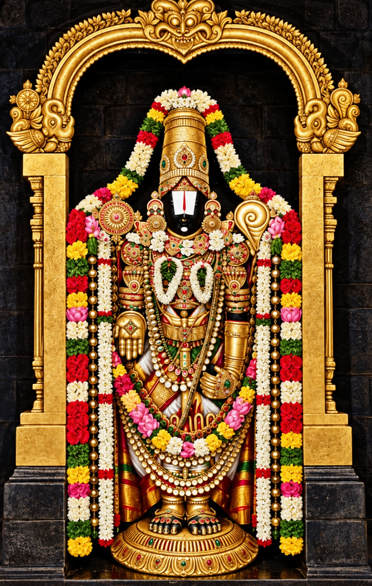
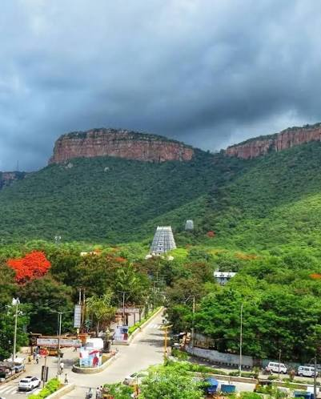

श्रीनिवासी विजयते
"तिरुमल क्षेत्र दर्शिनी ग्रंथमाला"
तिरुपति यात्रा
मूल लेखक
डॉ. आकेल्ल विभीषण शर्मा
हिन्दी अनुवाद
डॉ. एस.टी. अरुण कुमारी
तिरुमल तिरुपति देवस्थानम्, तिरुपति
2015
प्राक्कथन
“वेंकटाद्रि समम् स्थानम् ब्रह्माण्डे नास्ति किञ्चन।
वेंकटेश समो देवो न भूतो न भविष्यति ||”
इसका तात्पर्य है —
वेंकटाद्रि के बराबर कोई भी क्षेत्र इस ब्रह्माण्ड में ही नहीं है। वेंकटेश्वर के समान भगवान न रहे हैं न ही भविष्य में होंगे।
कलियुग में वैकुण्ठ के बराबर शोभायमान श्री वेंकटाद्रि पर्वत पर इस संपूर्ण ब्रह्माण्ड के स्वामी श्रीवेंकटेश्वर ने अवतार ग्रहण किया और वे हर पल भक्त जनों को दर्शन देकर, उन्हें धन्य बनाते हैं। एक पल के लिए ही सही, श्रीवेंकटेश्वर भगवान के दिव्य सुंदर मूर्ति का दर्शन प्राप्त कर धन्य होने के लिए, हजारों भक्त जन हर रोज इस क्षेत्र की यात्रा करते हैं।
भक्तजनों की आवाज़ सुनकर प्रत्यक्ष होनेवाले भगवान, भक्तजनों की इच्छाओं को पूरा करनेवाले वरदायक स्वामी के इस पवित्र क्षेत्र में, भगवान की पावन मूर्ति, स्वामी का पुण्य तटाक (पुष्करिणी) पवित्र तीर्थ स्थल, भगवान की सेवा में समर्पित, अत्यंत वैभव से युक्त नित्य क्रिया कर्म (कैंकर्य), भगवान के पावन ब्रह्मोत्सव, आदि विशेषताओं की जानकारी भक्तजनों तक पहुँचाने की दृष्टि से, तिरुमल तिरुपति देवस्थानम् ने "तिरुमल क्षेत्र दर्शिनी" नाम से ग्रंथमाला का प्रारंभ करके, पंडितों के द्वारा उन ग्रंथों की रचना करवाने का संकल्प किया है।
ऐसे ग्रंथ केवल तेलुगु भाषा प्रांतों में परिमित नहीं है, इस उद्देश्य से ति.ति.देवस्थानम्, श्रीनिवास के सारे भक्तों को उन ग्रंथों की जानकारी के लिए हिंदी और अंग्रेजी दोनों भाषाओं में अनुवदित और मुद्रित करती हैं।
इन ग्रंथों में फिलहाल पंडित आकेल्ल विभीषण शर्मा जी द्वारा रचित 'तिरुपति यात्रा" नामक ग्रंथ भक्त जनों को सौंप रहे हैं। हमें आशा है कि भक्त जन इस पुस्तक के द्वारा तिरुमल यात्रा संबंधी नियमों को जान लेंगे और धन्य होंगे।
सदा श्रीहरि की सेवा में
कार्यनिर्वहणाधिकारी,
तिरुमल तिरुपति देवस्थानम्,
तिरुपति

तिरुपति यात्रा
यात्रा - शब्द कोश में अर्थ यात्राओं के प्रकार
यात्रा आकारांत स्त्रीलिंग संस्कृत शब्द है। इस शब्द का अर्थ शब्द कोशों में - 'जाना', 'पुण्य क्षेत्रों में जाना', 'समय बिताना', 'मेला' आदि दिया गया है। पुराणों में या इतिहास के साहित्य में देखने से, उनमें राजाओं अथवा क्षत्रियों के द्वारा जैत्र यात्रा, याग अश्व संरक्षण यात्रा, घोष यात्रा आदि का ज़िक्र है। इसी तरह महाभारत या भागवत ग्रंथों में किसी निर्दिष्ट प्रयोजन से पहाड पर, या समुंदर के पास या वनों में जाने का वर्णन है। इसी तरह अग्र जातियों में विवाहों में "काशी यात्रा" की पद्धति है जो वास्तव में शिक्षा यात्रा है। पुराने जमाने में कवि, कलाकार, पंडित, शास्त्रज्ञ अपने ज्ञान को बढ़ाने के लिए और उसे स्थापित करने के लिए अपने शिष्यों के साथ यात्राओं पर निकलते थे। हम यात्रा शब्द को विहार यात्रा, विनोद यात्रा, विज्ञान यात्रा, साहस यात्रा, अंतरिक्ष यात्रा, शांति यात्रा, तीर्थ यात्रा, क्षेत्र यात्रा आदि के रूप में सुनते रहते हैं। इसी तरह कुछ अमंगल बातों से जुडकर भी यात्रा शब्द का प्रयोग होता रहा है। फिलहाल पाद यात्रा, सांत्वना यात्रा के बारे में सुन रहे हैं।
यात्राएँ चाहें कितने भी हों, "तीर्थ यात्रा" या "क्षेत्र यात्रा” पुण्य प्रद हैं। इनसे बहुत सारे प्रयोजन हैं। इसीलिए भारतीय पुराणों में बार - बार इनका ज़िक्र है, और इनका आचरण करने के लिए भी कहा गया है। कहा गया है कि ये यात्राएँ अनंत पुण्य प्रदान करनेवाले हैं, संसार के उस पार जाने के साधन हैं। अन्य धर्मों में भी यात्राएँ होती हैं, जैसे हज़ की यात्रा, जेरुसेलेम की यात्रा आदि। मानस सरोवर यात्रा बहुत ही प्रसिद्ध है। "तीर्थ यात्राओं" को अक्सर "क्षेत्र यात्रा" कहते हैं।
भारत देश में शैव, वैष्णव और शाक्तेय हिंदू भक्ति शाखाएँ हैं। इन शाखाओं में आचार व्यवहार, पद्धतियाँ, दर्शनीय स्थान आदि अनेक देखने को मिलते हैं। इनमें से बहुत सारे कारणों से श्री वैष्णव संप्रदाय जनसामान्य में काफ़ी प्रसिद्ध हुआ। श्री वैष्णव संप्रदाय 108 दिव्य क्षेत्रों के दर्शन पर ज़ोर देता है। श्री वैष्णव धर्म के मूल स्तंभ "नालायरम दिव्य प्रबंधम" में 108 दिव्य क्षेत्रों पर "पासुर" (काव्य) हैं। आलवारों द्वारा जिन क्षेत्रों में भगवान का मंगलाशासन किया गया हो उन्हीं वैष्णव क्षेत्रों को "तिरुपति" कहा जाता है। उनमें से केवल दो - तिरुपति तिरुमल, और अहोबिलं ही आंध्रप्रदेश राज्य में हैं।
तिरुपति तिरुमल शब्दों के विस्तृत अर्थ

तिरुपति तिरुमल इन दोनों शब्दों में "तिरु" तमिल भाषा का शब्द है। तमिलनाडु में अनेक जगहों के नामों में "तिरु" शब्द पाया जाता है - तिरुनेलवेली, तिरुचिनापल्ली, तिरुवेल्लिक्केनि, तिरुनिंड्रऊर आदि। इसी तरह गौरवप्राप्त व्यक्तियों को संबोधित करते समय तमिल पद्धति में "तिरु" शब्द को जोडते हैं। खासकर वैष्णव लोगों में "तिरु" शब्द का प्रयोग ज्यादा होता है तिरुमेनि, तिरुमाडवीधि, तिरुप्पल्लि येल्लुचि, तिरुमंजन आदि।
तिरुपति का अर्थ स्पष्ट है श्रीपति। महाविष्णु ही श्रीपति हैं, जिन जिन क्षेत्रों में लक्ष्मी के नाथ श्री महाविष्णु अर्चा मूर्ति के रूप में प्रकट हुए हों, वे सभी क्षेत्र तिरुपति ही हैं। लेकिन तमिलनाडु में कुछ पुण्य क्षेत्रों के नाम लेते समय तिरुपति शब्द को जोड़कर नहीं बोलते हैं। श्रीरंगं बोलते हैं पर श्रीरंगं तिरुपति नहीं बोलते, श्री विल्लिपुत्तूर कहते हैं पर उसमें तिरुपति शब्द को नहीं जोडते। लेकिन यह बात चित्तूर जिले में स्थित तिरुपति में नहीं है। इस शहर के आगे या पीछे कोई शब्द जोड़े बगैर केवल तिरुपति नाम ही है।
पुराने जमाने में सिर्फ तिरुमल शब्द प्रमुख था। 'मल' शब्द का अर्थ है पहाड़। तिरु पवित्र सूचक है इस तरह तिरुमल पवित्र पहाड है। आलवारों में एक पेयालवार ने कहा है- "सूद्रुम तिरुण्णु अरुवि पायुम तिरुमलै मेल" इसका अर्थ है चारों ओर समृद्ध निर्झरों से युक्त तिरुमल"। इस तिरुमल पर विराजमान स्वामी के लिए "तिरुमल" शब्द का प्रयोग किया। उसके बाद "तिरुवेंगड" नाम से सभी आलवारों ने भगवान की स्तुति की। इस शहर का व्यावहारिक नाम पुराने जमाने में, गोविंदराज पट्टणम्, अच्युतराय पुरम, कोत्तूरु भी था।
तेलुगु में कवि एर्रना ने "वेंकटाचल स्थाइ गोलिचि" कहकर "वेंकट" शब्द को प्रधानता दी। श्रीनाथ कवि ने काशीखण्ड में "श्रीशैल, वेंकट, अहोबिल, शोणाद्रि, सालग्रामादि पहाडों का ज़िक्र किया। ताल्लपाक के दिनों में "नीचे का तिरुपति, ऊपर का तिरुपति" कहते थे लेकिन संकीर्तन में एक ही अर्थ में उसका प्रयोग कहीं हुआ तो किन्हीं जगहों पर भिन्न प्रदेशों के रूप में हुआ। इसलिए संदर्भ के अनुसार उस जगह को समझना चाहिए -
तिरुपति पुर नायका
रामकु तिरुपति रामुडे मंदु
श्री वेंकटाद्रि तिरुपति लोपलनु
(क्या कहूँ तिरुपति पुर के नायक के बारे में तिरुपति के राम श्री वेंकटाद्रि तिरुपति में विराजमान है)
इसी तरह कन्नड हरिदास जनों ने "देवरनाम" संकीर्तनों में "तिरुमल तिरुपति वासा" (तिरुमल तिरुपति में रहनेवाला), कंडे तिरुपति वेंकटरमणा (देखा तिरुपति वेंकट रमण को) कहकर भगवान का स्मरण, ताल्लपाक कवि की तरह ही तिरुपति तिरुमल प्रभु के रूप में किया।
इस तरह तिरुमल क्षेत्र, तीर्थ, देवता प्रधान पवित्र स्थान है।
प्राचीन काल में तिरुमल के दर्शन हेतु आए भक्तजन
ऋग्वेद में वेंकटाचल की महिमा को दर्शाने वाले कुछ सूक्तियाँ हैं - उनमें प्रसिद्ध है-
अराइ ! काणे ! विकटे गिरिं गच्छ सदान्वे
सिरिंबिटस्य सत्वभिः तेभिष्टया चातयामपि
(11 ऋग्वेद - 7 - 153 - 8)
अर्थ है —
गरीबों ! अंधों ! धन रहितों, विकलांगों, अति दीन जनों, वेंकटाचल गिरि की ओर चलो। उस क्षेत्र में जाकर अचंचल ध्यान योग के लिए तैयार हो जाओ। महालक्ष्मी का शाश्वत निवास स्थान वेंकटाचल पति की सात्विकता, दया वात्स्ल्यादि दिव्य गुणों से आपके पाप समाप्त हो जाएँगे।
एर्रना के "हरिवंशम" में यात्रा क्रम में तिरुमल का स्पष्ट संकेत है। "वेंकटाचल महात्म्यमु" के अनुसार राजा दशरथ ने तिरुमल में आकर पुत्र संतान के लिए भगवान से विनती की। ऐसे ही श्रीराम जी द्वारा वेंकटाद्रि की यात्रा के भी प्रमाण हैं। कहा जाता है कि हनुमान जी का जन्म इसी पहाड पर होने के कारण उसका नाम "अंजनाद्रि" पड़ा। इतना ही नहीं पुराणों में प्रमाण हैं कि मार्कण्डेय आदि और भागवत के बलभद्र ने भी इस स्वामी का यशोगान किया। ये सभी पुराण पुरुष थे। इस संदर्भ में ताल्लपाक अन्नमाचार्य के संकीर्तन ध्यान देने योग्य है -
इल सप्तऋषुलु वेदकि प्रदक्षिणमु
ललरंजेसिन देवुडातडितडे
नेलवै कोनेटि पोंत नित्यमुगुमारस्वामि
कलिमिदपमु सेसि कन्न देवुडितडे
(इस भूमि पर ढूँढ़ ढूँढकर प्रदक्षिणा करके नमन जिसका किया, वह भगवान यही है, नित्य तटाक के पास तपस्या कर जिस भगवान का दर्शन कुमार स्वामी ने किया वह भगवान यही है। )
एक्कुवै ब्रह्मादुलु नेप्पुडुनिन्द्रादुलु
तक्कक कोलिचियुन्न तत्वमीतडे
चक्क नारदादुल संकीर्तनकुजोक्कि
निक्किन श्रीवेंकटाद्रि निलयुंडु नितडे
(जिस तत्व की पूजा कर इंद्रादि देवता और ब्रह्मादि करते हैं, वह तत्व यही है। सुंदर गीतों में नारद आदि के संकीर्तन के वश में खडे श्री वेंकटाद्रि निलय स्वामी यही है। )
दस आलवार, श्री तिरुमलेश की प्रशंसा पासुरों से करके प्रसिद्ध हुए। उनके काव्य तमिल भाषा में हैं। कुछ लोगों का मत है कि आलवारों ने पहाड के "अडिवारम" (पहाड के नीचे भाग) में ही खडे होकर भगवान का यशोगान किया। कुछ और विद्वानों का मानना है कि आलवारों ने तिरुमल पहुँचकर वहाँ के प्राकृतिक दृश्यों से खुश होकर, परमात्मा का संकीर्तन किया। कुछ और विद्वान कहते हैं कि आलवार तिरुमल पर आये ही नहीं पर उनके सामने वे सभी दिव्य तिरुपति स्थान प्रकट हुए जिन्हें देखकर उन्होंने संकीर्तन किया। इस विश्वास के पीछे यही बात है कि नम्मालवार ने अपना अधिकांश जीवन इमली के पेड़ के अंदर के छेद में बिताया। जो भी हो, चूँकि संगम साहित्य में ज़िक्र किया गया है; तमिल राजाओं ने विशेष सेवा की है और तिरुमल तिरुपति के शिलालेखों में अधिक तमिल भाषा का प्रयोग हुआ है, यह स्वीकार करना पड़ेगा कि पुराने ज़माने में तिरुमल जानेवाले भक्तों में अधिकतर तमिल भाषी रहे हैं। इतना ही नहीं श्री रामानुज संप्रदाय के विस्तार के बाद जो कि श्री वैष्णव संप्रदाय है, और तिरुचानूर में पांचरात्र पूजा विधान के प्रारंभ के बाद तमिल लोगों का आना जाना वास्तव में अधिक हुआ। "तोल्कापियं" में "तिरुवेंकडम" को तमिल देश की उत्तर सीमा माना गया है। यह स्वाभाविक है कि जन समाज अपने सीमा प्रांतों में अपने अस्तित्व को सुदृढ़ करना चाहता है।
कन्नड़ भाषी - हरिदास
दक्षिण भारत में कन्नड आंध्र प्रदेशों की एक विशेषता रही है। एक नदी के दो प्रवाह, एक पेड़ की दो शाखाएँ, एक माँ के जुड़वा संतान के रूप में कन्नड आंध्र भाषाओं की वृद्धि हुई। इन दो भाषाओं में समानता ज्यादा है, उसके बोलनेवालों के आचार व्यवहार, उन प्रांतों के राजाओं के बीच संबंध निकट और एकरूप हैं। खासकर विजयनगर के राजाओं के शासन काल में, सालव नरसिंह राय, श्री कृष्णदेव राय, अच्युत देवराय के शासन में वैष्णव संप्रदाय के प्रति आकर्षण ज्यादा रहा जिससे दोनों प्रांतों के लोगों के लिए तिरुपति दर्शनीय स्थान बना।
"देवरंदरे तिम्मप्प" "भगवान कहे तो निर्मल प्रभु" का कन्नड भाषियों का विश्वास इस बात का सबूत है। इतना ही नहीं श्रीपाद राय, व्यास राय, पुरंदर दास, कनकदास, प्रसन्न वेंकटपति दास आदि के देवर नाम संकीर्तनों से गाँव गाँव में तिरुमल दर्शन का आकर्षण बढ़ा। इसी संदर्भ में ताल्लपाक साहित्य का प्रकट होना और 150 वर्ष तक उसका प्रभाव भक्त जनों पर रहना, तेलुगु भाषियों में श्रीवेंकटेश्वर की भक्ति को बढ़ाने में सहायक रहा। खासकर मंदिर के कवि के रूप में अनेक वैष्णव मंदिरों में संकीर्तन आचार्य के रूप में अत्यंत भक्ति के साथ उनकी सेवा ने तेलुगु भाषियों को आकर्षित किया। रायलसीमा के लोगों के लिए ही नहीं, आंध्रा के अन्य प्रदेशों के लोगों के लिए भी स्वामी विशेष भक्ति के मूर्त रूप रहे। आज आंध्र के लोगों के लिए श्रीवेंकटेश्वर इष्ट देव हैं, इसमें कोई संदेह नहीं है। इसीलिए तमिल भाषियों के बाद तेलुगु भाषी भगवान की सेवा कर रहे हैं। भक्त जन अपने संतान को वेंगमांबा, वेंकटरमण, वेंकटेश्वर, श्रीनिवास, गोविंद, गोविंदम्मा, एडुकोंडलु का नाम देकर, भगवान का नाम हर पल ले रहे हैं। इसी तरह कवि, पंडित, साहित्यकार, गायक भगवान को अपना मानकर उनकी भक्ति विशिष्टता का प्रचार कर रहे हैं।
कन्नड़ वासियों ने तिरुपति की बहुत सेवा की। खासकर होयसल राजा, तुलुव वंशज मैसूर महाराजा के वंशज, सुरपुर स्थानाधीश यादव आदि ने अपनी सेवाओं से अपनी भक्ति को शाश्वत बनाया। यह ध्यान देने योग्य बात है कि तिरुमल पर "एकराष्ट्र" अतिथि भवन (मैसूर यात्रा गृह) है। तमिल और आंध्र के लोगों के बाद तिरुपति आकर भगवान की सेवा करनेवाले कन्नड भाषी ही हैं।
तिरुमल आनेवालों में उत्तर भारतवासी भी अनेक हैं। उत्तर भारत में भक्ति तत्व का प्रचार करनेवाले वल्लभाचार्य तेलुगु भाषी हैं। इसी तरह विजयनगर साम्राज्य के पतन के बाद, मुसलमानों के शासन के बाद, ईस्ट इंडिया कंपनी के समय, देवस्थानम् के प्रबंधन की जिम्मेदारी लेनेवाले कुछ महंतों ने उत्तर भारत में श्रीनिवास भक्ति का प्रचार किया। इन महंतों ने स्वामी को 'बालाजी' के रूप में उत्तर भारत में प्रसिद्ध किया। आज श्रीनिवास के साथ साथ बालाजी का नाम प्रमुख है, तो इसका कारण ये महंत ही हैं। यह सच है कि धर्मदास, भगवान दास, महावीर दास, प्रयाग दास आदि ने तिरुमल की प्रगति के लिए काफ़ी मेहनत की और तिरुमल तिरुपति में उत्तर भारतवासियों के लिए उत्तरादि मठ और राजस्थानी यात्रागृह का प्रारंभ किया।
तिरुमल - अन्य लोग
तिरुपति आनेवालों में महारास्ट्र के भक्त भी प्रमुख हैं। श्री वेंकटाचल महिमा के मुताबिक महालक्ष्मी कोल्हापुर पहुँची, जिसके कारण महाराष्ट्र के लोगों में श्रीवेंकटेश्वर के प्रति भक्ति बढ़ी। इतना ही नहीं कन्नड़ के हरिदास संप्रदाय के अधिकांश लोग कर्नाटक महाराष्ट्र के रहने वाले हैं। भजन करते हुए एक क्षेत्र से दूसरे क्षेत्र जाने का संप्रदाय महाराष्ट्र के लोगों के कारण ही अन्य प्रातों में भी फैला है। पंडरि भजन इसी प्रकार के हैं। तिरुमल की यह विशेष बात है कि भारत देश के सभी प्रांतों से भक्तजन यहाँ आते हैं। इसका एक कारण "कलौ वेंकट नायकः" (कलियुग के वेंकटेश्वर) का विश्वास है तो दूसरी ओर श्री श्रीनिवास भगवान की महिमा का प्रचार प्रसार है। इसके साथ तिरुमल तिरुपति देवस्थानम् के द्वारा विविध क्षेत्रों में अनेकानेक आध्यात्मिक कार्यक्रमों का आयोजन भी होता है। इसी परिप्रेक्ष्य में विदेशों में भी श्रीनिवास के मंदिरों की स्थापना हुई। इसके कारण हिंदू धर्म के लोग ही नहीं, अन्य धर्मावलंबी भी घोषणा देकर तिरुमल के मंदिर में दर्शन प्राप्त करने आने लगे।
भगवान की सेवाओं में मुसलमान भी भाग लेते हैं, यह इस मंदिर की एक और विशेषता है। 'बीबी नांचार' की कहानी इस भक्ति भावना के लिए नींव है। दूसरे धर्मों की अवहेलना किए बगैर आदर की भावना के साथ व्यवहार करने का भाव भी इसका कारण है।
तिरुमल के मार्ग
पुराने जमाने में तिरुमल जाने के चार मार्ग थे। ये सभी पैदल जाने या छोटे वाहनों से जाने लायक मार्ग थे। तलकोना, सिद्धेश्वर क्षेत्र से जंगल के मार्ग से होते हुए लगभग 25 मील का एक रास्ता है। कड़पा ज़िला से आनेवालों के लिए बालपल्ली - मामंडूर मार्ग से पहाडी रास्ता एक और है। यह सीढियों का रास्ता है जो थोडा बहुत वैसा ही है। इस रास्ते में दो मंडप भी देखने को मिलते हैं। गोगर्भं बांध के पास "ईतकायल मंडप" इनमें से एक है। तीसरा मार्ग तिरुपति से अलिपिरि के मार्ग से ऊपर पहुँचने का रास्ता। चौथा मार्ग चंद्रगिरि श्रीवारि मेट्लु से ऊपर पहुँचने का रास्ता है। शायद विजय नगर राजा इसी मार्ग से भगवान के दर्शन हेतु जाते थे। कहा जाता है कि तिरुमल मंदिर में नैवेद्य की घंटी सुनकर ही चंद्रगिरि के राजा खाना खाते थे।
इन मार्गों के अलावा कपिलतीर्थं, अक्कारंपल्ली, मंगलम्, चेत्राइगुंट, करकंबाडी से श्रीकालहस्ति जाने का मार्ग है। श्रीकालहस्ति से तोंडमनाडु, गुडिमल्लं, नीलिसानिपेट, गाजुलमंड्यं कल्लूरु, अत्तूरु, पुत्तूरु से नारायणवनम् और नागुलापुरम् के मार्ग हैं। इसी तरह तिरुपति, तिरुचानूर, अप्पलय्यगुंट, तिरुमण्यम् से पुत्तूर जाने का मार्ग है। मेकंजी कैफ़ीयत में तिरुमल के अनेक मार्ग बताए गए हैं। उदाहरण के लिए उत्तर से मामंडूर, सेट्टिगुंटा का मार्ग, दक्षिण से तिरुपति, कपिलतीर्थ, पेरुर, श्रीवारि मेट्लु मार्ग, पूर्व से करकंबाडी, कालहस्ती के मार्ग, पश्चिम से नागपट्ल कनुमा मार्ग हैं। इतना ही नहीं, कहा जाता है कि कपिलतीर्थं से तिरुमल पहुँचने का एक सुरंग मार्ग भी है। जनश्रुति है कि तोंडमान चक्रवर्ती इसी मार्ग से जाकर भगवान की सेवा करते थे।
आज तिरुपति पहुँचने के लिए पैदल जाने के रास्तों के अलावा सड़कें, रेल मार्ग और वायुयान मार्ग अनेक हैं। पर तिरुमल जाने के लिए, पैदल जाने के दो रास्ते हैं (अलिपिरि - तिरुमल और श्रीवारि मेट्लु तिरुमल) और सड़क मार्ग दो हैं - एक ऊपर पहाड़ चढने के लिए और दूसरा नीचे उतरने के लिए। एक बार रेल मार्ग बनाने का प्रयास किया गया पर आध्यात्मिक दृष्टि से इस विचार के विरोध में उसे शुरू ही नहीं किया गया। इसी तरह प्रमुख व माननीय व्यक्तियों के आने के लिए हेलीपैड के निर्माण का भी बड़ा विरोध किया गया और वह भी बंद हो गया। आज तिरुपति से देश के विभिन्न प्रांतों में जाने के लिए रेल का प्रबंध है। उसी तरह रेणिगुंटा से भी विभिन्न शहरों में जाने के लिए रेल गाडियाँ हैं। अब रेणिगुंटा से हैदराबाद और दिल्ली जाने के लिए हवाई जहाज हैं। पुराने जमाने में तिरुमल जाने के लिए बैलगाडियाँ थीं। उसके बाद मोटर साइकल, कार, तिरुमल तिरुपति देवस्थानम् की बसें आदि यातायात के साधन बनें। अब आर.टी.सी. बस और प्राइवेट टैक्सी की भी सुविधा है।
वेंकटाचल यात्रायां
पादमेकं मुनीश्वराः
ब्रह्महत्यादि पापघ्नं
संसारार्णव तारकम्
तमिलों की तिरुमल यात्रा पद्धति
तमिलों की तिरुमल यात्रा की अनेक पद्धतियाँ हैं। सेलम्, कोयम्बत्तूर जैसे दूर जगहों से भी यात्रीगण सिर्फ दो तीन कपड़े हाथ में लिए, पीले रंग के कपड़े पहनकर, बिना चप्पल के पैदल चलते चलते, सड़कों पर बीच - बीच में रुकते हुए तिरुमल पहुँचते हैं।
तमिल लोग विशेषतया पेरटासि महीने में भगवान का दर्शन करना पसंद करते हैं। खासकर उस महीने के शनिवार के दिन भगवान का दर्शन बहुत ही श्रेष्ठ मानते हैं। तिरुमल में आए न आए, पेरटासि शनिवार को सिर से नहाकर, भगवान का तिलक लगाकर, आटे से बने दीपदान में दिया जलाकर, एक ही बार खाना खाकर तमिल लोग व्रत रखते हैं। इस महीने में तमिलों के चेहरों पर भगवान के तिरुपुंड्र (सफेद और लालवर्ण के तिलक) देखने को मिलते हैं।
'नालायरम' नाम के तमिल प्रबंध काव्य में, जो कि द्रविडों के लिये वेद समान है, अलवारों के पासुरों (गीतों) में श्रवणा नक्षत्र का जिक्र है। भगवान का नक्षत्र भी श्रवणा है। जिस तरह कृत्तिका नक्षत्र के दिन तमिल भाषी सुब्रह्मण्यम् भगवान की पूजा करते हैं, उसी तरह श्रवणा नक्षत्र के दिन वे भगवान वेंकटेश्वर की विशेष पूजा करते हैं। इस "नालायरम" में "द्वादश तिथि" का वर्णन है। तमिल भाषी उस दिन को भगवान का दर्शन करना चाहते हैं। तमिल भाषी "शनि नीराडु" या शनिवार को सिर से नहाने में विश्वास रखते हैं। कुछ लोग इसे "शुनै नीराडु" - जलपात में नहाओ कहते हैं।
कन्नड हरिदासों ने भगवान वेंकटेश्वर को "द्राविड वीर" कहा है। शायद उन दासों के तिरुमल यात्रा के दौरान, वहाँ अधिक समय तक तमिल भक्तों का रहना इसका कारण हो सकता है। या तिरुमल में जहाँ भी देखो श्रीवैष्णव ब्राह्मणों का दर्शन, नालायरम काव्यों का काव्यपाठ, तमिल वैष्णव पदों का प्रयोग इसका कारण हो सकता है।
तमिल भाषियों के भगवान वेंकटेश्वर के प्रति भक्ति का एक और रूप है। अपने घर के पूजा मंदिर में एक "हुंडी" जैसा गोल बर्तन (छोटा मटका जैसा) रखकर उस पर पीले रंग का कपडा बांधते हैं और समय-समय पर उसमें पैसे डालते हैं। उसी प्रकार जब व्याकुलता से पीडित होते हैं, या अपने लोग ऋणग्रस्त हो जाते हैं, तब भगवान के दर्शन का प्रण लेकर, मिन्नत स्वरूप हल्दी के कपडे में एक रुपया गांठ बांधकर रखने की पद्धति भी है। इसी तरह कोई तिरुमल की यात्रा नहीं कर पाते तो उनकी ओर से पैसे ले आकर, यात्रीगण उसे सावधानी से भगवान को समर्पित करने की भी पद्धति है। रास्ते भर अपने आपको भगवान वेंकटेश्वर के भक्त होने की बात जताते हुए 'एलुमलैयाने' 'तिरुवेंगडवा', 'गोविंदा - गोविंदा' जैसे नाम स्मरण करते हुए चलना एक और पद्धति है।
श्रीवैष्णव संप्रदाय में 'वडगलै' और 'तेंगलै' नाम की दो उप शाखाएँ हैं। भगवद रामानुज 'तेंगलै' संप्रदाय के पथ प्रदर्शक हैं और वेंदात देशिकन 'वडगलै' संप्रदाय के मार्गदर्शक हैं। चूँकि रामानुज जी आदिशेष के अवतार हैं, और तिरुमल शेष पर्वत है, इस पहाड पर विराजमान भगवान की सेवा के लिए तेंगलै संप्रदाय के भक्तों का आना सहज ही है। तेंगलै लोगों के लिए द्रविड वेद नालायरम परम पवित्र प्रमाण ग्रंथ है। वडगलै लोगों के लिए संस्कृत शास्त्रों में वर्णित निर्दिष्ट वैष्णव संप्रदाय अत्यंत महत्वपूर्ण है। लेकिन वे आलवारों और नालायरम को भी विशेष श्रद्धा से मानते हैं। इसीलिए तिरुपति और तिरुमल में वडगलै, तेंगलै मतों की स्थापना हुई। अत्यंत निष्ठा से आचार - व्यवहारों का पालन करने वाले, भगवान की सेवा में निरंतर कार्यरत श्रीवैष्णव आचार्यों ने तिरुमल यात्रा को निर्दिष्ट उत्सवों में भाग लेने के लिए अनुकूल पद्धति में आयोजित कर लेते हैं।
निष्ठा से आचार - व्यवहारों का पालन करनेवाले श्री वैष्णव, तिरुमल पर होने वाले 'सात्तु मुरै' में बड़े जीयर, छोटे जीयर स्वामी, एकांगी वैष्णव स्वामी के साथ भगवान की सेवा करने के लिए तत्पर रहते हैं। इतना ही नहीं आलवार आचार्य पुरुषों के लिए आयोजित उत्सवों में भी ये लोग भाग लेने आते हैं, यह दूसरी विशेषता है। इसीलिए भगवद् रामानुज अवतार उत्सव में, और अनंत आलवार द्वारा भगवान हेतु निर्मित बगीचे में आयोजित उत्सव में ये आचार्यगण विशेष रूप से भाग लेते हैं। इतना ही नहीं उत्सव मूर्ति को जब मंदिर के बाहर श्री मार्गों (तिरुमार्ग) पर शोभा यात्रा के लिए ले आते हैं तब ये आचार्यवर भगवान की मूल मूर्ति के दर्शन हेतु मंदिर में कभी नहीं जाते हैं। उनकी भावना है कि उस समय भगवान की सारी सत् चित कला उत्सवमूर्ति में विलीन होती है। व्यावहारिक धरातल पर शायद उन दिनों सारे आचार्यों की सेवा शोभा यात्रा में आवश्यक होने के कारण, सभी लोग उसी में लगे रहते थे और मंदिर के बाहर के कार्यभार को अधिकतया संभालते थे।
श्रीवैष्णव भक्तजन जो अत्यंत निष्ठावान होते हैं, ब्रह्मोत्सव के दौरान, खासकर गरुड वाहन के दिन, वे मलयप्पास्वामी के सामने वेद गोष्ठी करते हैं और भगवान के मंदिर में जाना भी पसंद नहीं करते। इतना ही नहीं, जो अत्यंत निष्ठावान श्रीवैष्णव होते हैं, वे ऐसे प्रांतों में ठहरना भी पसंद नहीं करते जहाँ बावड़ी या कुँआ नहीं हो। इसी तरह पहले तिरुचानूर जाकर अलमेलु मंगै तायार का दर्शन करके, तदुपरांत तिरुमल जाकर, पद्धति के अनुसार वराह स्वामी की पूजा करके, बाद में तिरुमलेश भगवान का दर्शन करते हैं। तिरुमल पर स्मार्त संप्रदाय के अनुरुप कांची मठ, पुष्पगिरि मठ आदि हैं। उसी तरह द्वैत संप्रदाय के अनुयायियों, उत्तरादि मठ, उडुपी मठ, राघवेंद्र मठ, व्यासराय मठ आदि हैं। निष्ठा और धार्मिक आचरणों पर ज्यादा ध्यान देने वाले उन्हीं मठों में ठहरना और खानपान आदि वहीं पर करना पसंद करते हैं। आजकल के होटलों में खाना पसंद न करनेवाले भी इन्हीं मठों में ठहरते हैं। कुछ लोग ति.ति.दे. के यात्रीगृहों में रहते हैं और भोजन के लिए इन मठों में जाते हैं।
कन्नड़ भाषियों के यात्रा विधान
प्राचीन काल में कन्नड़ भाषी अपने अपने गाँव से इकट्ठा होकर एक साथ दलों में यात्रा करते थे। लेकिन तमिल भाषियों की तरह वे आजकल दूर के क्षेत्रों से पैदल नहीं आ रहे हैं। कभी कभी गाँववाले एक साथ अब भी यात्रा करते हैं, तब सबके आगे एक व्यक्ति घंटा बजाता चलता है और एक व्यक्ति एक लंबे वाद्य को कभी कभी बजाता है। इस तरह करने का फायदा यह है कि जंगलों में यात्रा करते समय क्रूर जानवरों का हमला नहीं होगा और विराम सहित चलनेवाली यात्रा में अगर कुछ लोग बीच में रुक भी जाते हैं, तो आवाज सुनकर उस दिशा में यात्रा कर सकते हैं।
कन्नड़ हरिदासों ने अपने "देवरनामगलु" में यात्राक्रम का विस्तार से वर्णन किया। विजयदास नामक व्यक्ति ने कहा “सल्ललित मनदल्लि यात्र माड" (प्रशांत मन से यात्रा कीजिए)। पुरंदर दास ने “दासर कूडे गोविंद अल्लि दारि नडुवदे चंद" (दास जनों के साथ रहें और दास जन जिस मार्ग से चलते हों उसी में आगे बढ़ें।) व्यास विट्ठलदास ने "काशी कर्नाटकद देश देशद जनरु श्रीस उत्सवके जनरु विदगिदरुगा" कहकर तिरुमल में आनेवाले विभिन्न प्रांतों के जनों का जिक्र किया।
हरिदास साहित्य से पता चलता है कि कन्नड़ भाषियों को साप्ताहिक सेवाओं में गुरुवार की 'पूलंगि सेवा' (फूल अलंकरण) और शुक्रवार की पुनुगु कापु (विशेष लेपन) सेवा, एवं उत्सवों में गरुड़ सेवा, रथ सप्तमी सेवा आदि बहुत पसंद हैं। कन्नड़ भाषियों ने तिरुपति यात्रा को गिरियात्रा ही माना है। कन्नड़ हरिदास जनों में एक विजयदास जी ने एक मनोहर वर्णन किया जो इसका प्रमाण है -
क्षीर सागर मंथन के समय भगवान ने मंदर पर्वत को उठाया। अमृत मंथन के दौरान जब हालाहल (विष) के निकलने के कारण देव - दानव भागने लगे, तब श्री महाविष्णु की आज्ञा से शिवजी ने उस विष को पी लिया और उस विनाश को रोका। श्रीकृष्ण ने अपनी छोटी उंगली पर गोवर्धन गिरि को उठाकर गायों और गोपालकों की रक्षा की। राम अवतार में लक्ष्मण जी जब मूर्छित हो गए, तब हनुमान जी संजीविनी पर्वत ले आए और भगवान ने हनुमान जी पर करुणा बरसाई। विजयदास जी आगे कहते हैं -
"ई गिरिय यात्र माडिदे जनरिगे नाग शयन जय विजय विठल वेंकट पुलिवा" - तिरुमल की यात्रा करनेवाले भक्तों पर आदिशेष पर लेटे भगवान के अर्चामूर्ति श्रीवेंकटेश्वर का अनुग्रह सदा रहेगा। विजयदास जी की भक्ति और निष्ठा अपार है।
कन्नड़ भाषियों के लिए श्रावण का महीना महत्वपूर्ण है। भगवान का नक्षत्र "श्रवण” है, यही इसका कारण है। श्रावण के महीने में शनिवार के दिन घर में ही भगवान की पूजा, निष्ठा के साथ करते हैं। घर में किसी की कोई समस्या हो तो भगवान से प्रार्थना करके मिन्नत स्वरूप कपडे में ऐच्छिक चीज गाँठ बांधकर मनौती (मुडुपु) समर्पित करते हैं। उसके बाद तिरुमल की यात्रा करके अपनी कृतज्ञता अनेक रूपों में ज्ञापित करते हैं।
कुछ लोग "मुँह पर ताला लगाकर" (मौनव्रत में) भगवान की सेवा करते हैं। इस संप्रदाय के बारे में उग्र श्रीनिवास विठलराय दास कहते हैं - "जागु माडदे बाइ बीगव कैकोंडु" (मतलब बिना विलंब के मुँह पर ताला लगाकर) तिरुमल की यात्रा करते हैं। तिरुमल पर दर्शन के दिन और उसके बाद के दिन को "क्षेत्र उपवास" मानकर पवित्रता से उसका पालन करते हैं। इतना ही नहीं राजा सालव नरसिंह राय के आदेश के अनुसार, और मुलबागल के मठाधीश श्रीपाद राय जी की आज्ञा के अनुसार व्यासराय जी ने भगवान की सेवा में तिरुमल जाकर "12" वर्षों के लिये अपना जीवन बिताया। कन्नड़ भाषी व्यासराय जी के "आह्निक मंडप” के दर्शन को भी, महत्वपूर्ण मानते हैं। इतना ही नहीं, जिस जगह पर संपंगि प्राकार प्रदक्षिणा के बाद व्यासराय जी ने तपस्या की, उस जगह का भी कन्नड़ भाषी भक्ति से दर्शन करते हैं। कन्नड़ भाषियों का विश्वास है कि गुरुवार को फूलों से सर्वांग अलंकरण "पूलंगि" सेवा का प्रारंभ और मंदिर के विमान (ऊपर के छत के भाग) पर "विमान वेंकटेश्वर" की पुनः प्रतिष्ठा व्यासराय जी ने ही की है।
विजयदास जी (हरिदास) भगवान की मूल "सन्निधि" (मूल मूर्ति का कमरा) की चारों ओर पाँच बार प्रदक्षिणा करने की बात करते हुए कहते हैं - "ऐदु सारे प्रदक्षिणा वंदिसि तिरुगिदरे (पाँच बार भक्ति से प्रदक्षिणा कीजिए। इस तरह करनेवालों को स्वामी मुँहमांगे वर प्रदान करते हैं - यह उनका विश्वास है।
आलवारों की तरह हरिदास जनों ने भी भगवान की भक्ति में गीत लिखे। उनका दृढ विश्वास है "देवरंदरे तिरुपति तिम्मप्प" - भगवान कहे तो तिरुमल के स्वामी ही हैं। "संकट बंदागे वेंकटरमण" कहना उनकी आदत है (संकट के समय में वेंकटरमणा कहना)। कन्नड़ हरिदासों में पुरंदरदास ने भगवान पर सौ से ज्यादा "देवरनामगलु" की रचना की। कहते हैं कि जब पुरंदरदास तिरुमल पर अन्नमाचार्य के दर्शन के लिए आए तो, अन्नमय्या खुश हुए और उन्हें "विठ्ठल के अवतार" कहकर उनकी (पुरंदरदास की) प्रशंसा की।
कीर्तन करते हुए, डांडिया खेलते हुए, हर सीढ़ी पर कुंकुम लगाकर तिरुमल तक जाना कन्नड़ वासियों का एक संप्रदाय है, इसे "मेट्लोत्सवम्" (सीढ़ी उत्सव) कहते हैं। ति.ति.दे. इस संप्रदाय का समर्थन 'दास साहित्य परियोजना' के अधीन कर रहा है।
आंध्रा के लोगों का तिरुमल यात्रा पद्धति
चूँकि तिरुमल आंध्रप्रदेश में है, यहाँ के लोग भगवान श्रीनिवास को अपने घर के इष्ट देवता मानते हैं। तेलुगु लोगों के लिए "तिरुमल यात्रा" जीवन का अंग है। कन्नड़ भाषियों की तरह तेलुगु भाषियों के लिए भी श्रावण महीने के शनिवार विशेष महत्वपूर्ण हैं। संकट के समय भगवान से मिन्नत माँगना, मुडुपु (कपडे में गांठ लगाकर प्रार्थना, मनौती) चढ़ाना, प्रार्थना को संकट के टलने पर पूरा करना सदियों से आ रही परंपरा है। अन्नमाचार्य के गीतों में तिरुपति तिरुमल यात्रा का स्पष्ट वर्णन है -
नाना दिक्कुल नरुलेल्ला
वानल लोनने वत्तुरुगदिलि
सतुलु सुतुलु बरिस रुलु बंधुवुलु
हितुलु गोलुवग निन्दरुनु
शतसहस्र तोडने वत्तुरु गदलि
मडुपुलु जालेलु मोगिदल मूटलु
कडलेनि धनमु गंतलुनु
कडुमंचि मणुलु करुलु दुर्गमुलु
वडिगोनि चेलगुचु वत्तुरु गदलि
मकुटवर्धनुलु मण्डलेश्वरुलु
जगदेक पतुलु जतुरुलनु
तगु वेंकटपति दर्शिम्पग बहु
वगल संपदल वत्तुरु गदलि
(चारो दिशाओं के लोग चले आते हैं बरसातों में भी, पत्नी संतान बंधुजन साथी सब निकलते प्रार्थना हेतु सौ - हज़ार लोग एक साथ आते हैं "मुडुपु" के गांठ सर पर लिए अमित धनराशि भगवान को चढ़ाने श्रेष्ठ मणिमाणिक्य हाथ ले चलते कूदते खेलते चल पड़ते हैं सब मकुट धर राजा, भूमि के स्वामी सब चलते दर्शन हेतु वेंकटेश्वर के मंदिर में छोड़ मोह माया निकल पड़ते हैं)
तिरुमल में आंध्र के जन ही नहीं भारत भर के लोग आते हैं, इस बात के बारे में अन्नमय्या कहते हैं "सभी प्रांतों के लोग वेंकटपति पर विश्वास करके हर साल आते हैं और धन्य होते हैं" लेकिन तिरुमल के स्थानीय लोग मोहमाया में बंधे रहते हैं।
विजयनगर राजाओं के समय तिरुमल यात्रा पद्धति का वर्णन चिन्नन्न "अन्नमाचार्य चरित्र" में स्पष्ट बताते हैं। जिस तरह से पालकुरि सोमन ने श्रीशैल यात्रा पद्धति का वर्णन किया, उसी तरह चिन्नन्न ने द्विपद में तिरुमल यात्रा का वर्णन किया।
(चारों ओर देखते हुए श्रीराम की सेना की तरह ताल लय के साथ ढोल बाजा बजाते हुए आनंद के आँसू बहाते हुए, उस नंदनंद की स्तुति करते तन्मय में हुए नाचते चिन्मय आनंद प्राप्ति के सुख में नाचते हुए। विष्णु के दर्शन हेतु निकले सनकादि लगते ये जन मानो चल पडे महर्लोक के दर्शन में गोविंद गोविंद कहते हुए उसी क्रम में नरहरी हरी कहते हुए तिरुमलेश को वरदायक स्वामी मानकर वर्णन करती वरप्रदाय को पृथ्वी पर नाच रहे मयूर सम, लागे। विविध वस्त्र पहन, माथे पर सघन तिलक लगाये उन पर मयूर अंकित कण्ठमाला पहनकर अनेकानेक शंख चक्र हाथ में लेकर वन में विहरण करनेवाले स्वामी वरदायक स्वामी है तिम्मप्पा)
तरिगोप्पुल मल्लन्न 'चंद्रभानु चरित्र' में तिरुमल यात्रा की अनेक विशेषताएँ उल्लिखित हैं। बहुत दिन बाद मिलने पर चंद्रभानु से अपनी विविध यात्राओं के बारे में कहते हुए विजयलोल ने, तिरुमल का यथा वर्णन किया अनशन व्रतमुचे सतुल कार्यम्बुन गनपट्टुवोरि बीगमुलवारु म्रोक्कु दीर्चुटकुनै मूक मूगलुगूडि येतेन्चु तलमोपुटिण्ड्लवारु ब्राणमुल् पिडिकिटबटुक इट्टट्टु देमलनि शिरसु कोडेमुलवारु दैहिकायासम्बु दलपक दोलुचु नडतेन्चु पोरलु दण्डमुवारु नामटामट म्रोक्कुवारडुगु नडुगु दण्डमुलवारु मिगुल संदडि योनर्चि नडरि पन्नग सार्वभौमाचलेन्दु गोलुव कोटानुकोट्लु पोन्यूट ममर
(उपवास करते निकलनेवाले, मौनव्रत में बढ़नेवाले, प्रार्थना पूरा करने, मिन्नतों की गठरियाँ ले चलनेवाले वन प्रांतों में डर डर कर चलनेवाले भक्तजन देह के कष्ट को भूल, लेटकर लुढकते चलनेवाले भक्त जन पग पग पर नमन करते, प्रार्थना करते चलनेवाले चलते हैं राजा, महाराजा सेवा करते उस लोकेश की)
अन्नमय्या एक और विशेषता बताते हैं -
मारु चेतु लीयवदु मारुगाल्लीयवदु
बीरान गुण्डेलु गोसि पेट्टवट्टु
गोर पडि चिच्चुलोन गुण्डालु चोरवदु
ऊरक मीवारमनि उन्न चालु
सिडिदल लिय्यवदु जीवाल जम्पवदु
बडि बडि पग्गालबारवदु
सिडि मीद बित्तरपुचिम्मुलु चिम्मगवदु
कडनुंडि दारिगन्न चालु
(दूसरे हाथ मत दो, न दो और दो पैर, दिखावे के लिए अपने हृदय को मत चीरो नाखूनों में कील मत चढ़ावो बस भगवान का अपना बनो पैसा न चढ़ावो, पशुओं की बलि मत दो दूर से देखना ही काफी है)
इस तरह अन्नमय्या वीर शैव पद्धतियों का पालन न करने की बात कहते हैं।
गोविंद नाम स्मरण
सामान्यतः किसी भी मंदिर में सभी भक्त एक साथ एक ही नाम का उच्चारण नहीं करते। लेकिन सिर्फ तिरुपति तिरुमल यात्रा में हम लगातार “गोविंदा गोविंदा" का नाम जप सुनते रहते हैं। इसके दो मूल कारण हैं -
एक कारण यह है कि भगवद् रामानुज जी ने तिरुपति के गोविंदराज स्वामी और तिरुमल के श्रीनिवास भगवान को अभिन्न माना और तिरुमल की तरह ही गोविंदराज स्वामी के लिए भी सभी सेवाओं का समर्पण करने का आदेश दिया।
दूसरा कारण यह है कि श्रीकृष्ण अवतार के बाद श्री महाविष्णु तिरुमल पर अर्चामूर्ति के रूप में अवतरित हुए। वही वेंकटराम हैं, वही वेंकटकृष्ण हैं। श्रीकृष्ण ने गोवर्धन पर्वत को उठाकर गायों और गोपालकों की रक्षा की। चूँकि वे पहाड पर चढ़ रहे हैं भक्त जन "गोविंदा" का स्मरण करते हैं। साँप के बिल में लेटे श्रीनिवास ने गाय पर मार पड़ने से बचाया था, शायद इसलिए भी भक्त जन उन्हें 'गोविंदा' कहकर पुकारते हैं।
"तिरुमलै उलुगु" नामक पुस्तक में "घुष्यते संघशः उच्चैः गोविंदेति पुनः पुनः" कहा गया है भक्त जन दलों में चलते चलते जोर से बार बार "गोविंदा गोविंदा" कहते रहते हैं। इसी परिप्रेक्ष्य में अन्नमय्या लिखते हैं
कोलिचिते रक्षिचे गोविन्दुडितडु
इलकु लक्ष्मिकि मगडी गोविन्दुडितडु
(प्रार्थना करने से रक्षा करनेवाला गोविंद है यह धरती और लक्ष्मी के पति गोविंद है यह)
कृष्णावतार की घटनाओं का वर्णन करके अन्नमय्या लिखते हैं -
पोन्द श्रीवेंकटाद्रियै पोसंगंदिरुपतिलो
अंदमै पव्वलिंचिन आ गोविन्दुडितडु
(श्री वेंकटाद्रि पर्वत पर तिरुपति में सुंदरता की मूर्ति बन लेटा गोविंद है यह)
इसी तरह गोविंद नाम हमेशा लेने के लिए कहते हैं - "गोविंदादि नामोच्चारण कोल्लग दोरिकेनु मनकेपुडु"
(गोविंद के नाम स्मरण बार बार करने का अवसर हमें कब मिला)
कन्नड भाषा में उरगाद्रि वास विठल राय भी गोविंद नाम स्मरण करते हुए पहाड़ चढ़ने वाले भक्तों के बारे में कहते हैं -
"गोविंद सच्चिदानंद मुकुंदनेंदु
उच्चरिप भकुतरिगे शरणु"
(गोविन्द, सच्चिदानंद मुकुंद नाम उच्चारण ही भक्त के लिये आश्रय है)
"गोविंद, सच्चिदानंद, मुकुंद कहते हुए चलनेवाले भक्तजनों के शरण में जाता हूँ।"
इसी तरह मंदिर के चारों ओर लेटकर लुढ़कते हुए प्रदक्षिणा करनेवाले भक्तों के दृश्य का भी "मत्ते उरुलतली" कहकर वर्णन करते हैं।
तिरुमल पर चढ़नेवाले अन्नमय्या के समय के भक्तजनों का वर्णन इस प्रकार है -
पेट्टिनदि नुदुटनु पेरुमाल्ल लांछनमु
दट्टमै भुजमुलंदु दैवशिखामणि मुद्र
नेट्टन नालुकमीद नीलवर्णनाममिदे
तनुवुपै दुलसि पद्माक्षमालिकलु
दिनमु गडुपु निंचेदि हरिप्रसादनमु
(ललाट पर खींचकर भगवान का तिलक दृढ़ भुजाओं पर अंकित प्रभु के चिह्न (शंख - चक्र)
जीभ पर हमेशा नीलवर्ण स्वामी के श्रीनाम शरीर पर तुलसी और रुद्राक्ष मालाएँ दिन बिताते हैं खाकर भगवान हरि का प्रसाद)
इस वर्णन से स्पष्ट होता है कि भगवान का प्रसाद मात्र खाकर भक्त जन तिरुमल पर समय बिताते थे। भोजन को बेचना महापाप है, खासकर तीर्थ क्षेत्रों में। इसीलिए ति.ति.दे. "नित्यान्नदान" को प्रोत्साहित करता है। इस परियोजना में भक्त जन लाखों में अन्नदान के लिये धन भेजते हैं।
उत्तर भारतवासियों की तिरुमल यात्रा पद्धति
बाहर से तिरुमल आनेवालों को "परस्थलीय", "देशांतर जन" कहते हैं। इन्हें "परुष" कहते हैं। अन्नमय्या के गीतों में "परुष" शब्द का काफी प्रयोग है। जो आंध्र प्रदेश के नहीं हैं, वे "परुष" हैं। अन्नमय्या ने देशांतर वासियों के अनेकानेक मठों का उल्लेख किया यथा -
संजीवनि परषल कोदवगनु
पादलि पुरुषलेल्ल ! पोदिगि सेविंचेरु
तिरुमै कोनेटि चैतन्दीर्थफ़लमुलनेल्ल
परुषल कोसगीनि परमात्मुडु
(देशांतर जन (परुषों) को संजीविनी देने जो आए पैदल सेवा करने तिरुमल पर पुष्करिणी के पुण्य जल इन देशांतर (परुषों) को देता है परमात्मा)
पुरंदरदास जी भी कहते हैं -
"अल्ललिल परुषेय गुंपु मत्तल्लि तोपिन तंपु"
(यहाँ - वहाँ परुषों की भीड़ और यहाँ वृक्षों की आड़)
"जगह जगह पर देशांतर जनों की भीड है।"
उत्तर हिंदुस्तानी (गुजराती और राजस्थानी) लोग गुरु के पीछे - पीछे चलते हैं और भजन करते हुए आगे बढ़ते हैं। उनका मनचाहा नामोच्चारण “गिरिधर गोपाला" है।
उत्तर के लोग वल्लभाचार्य के प्रति अपार गौरव रखते हैं। वल्लभाचार्य तेलुगु भाषी हैं, लेकिन उत्तर भारत में भक्ति मार्ग के प्रचार करने का श्रेय इन्हीं को जाता है। कहा जाता है कि वे वराहस्वामी के मंदिर के एक खंभे के पास बैठकर तपस्या करते थे। इसलिए उत्तर भारत के लोग वराहस्वामी का दर्शन करके, वल्लभराय के खंभे को नमन करके उसके बाद ही तिरुमलेश के दर्शन के लिए जाते हैं। इसी तरह नेपाल के लोग भी प्राचीन काल से यहाँ आते रहे हैं।
अन्नमाचार्य ने श्रीनिवास की सेवा करते हुए राधा माधव संकीर्तन और जगन्नाथ स्तुति करके सारे वैष्णव भक्तों को एकसूत्र में लाने की कोशिश की।
श्रीवारि मेट्टु मार्ग
किसी भी मंदिर में भगवान (प्रधान मूर्ति) को "श्रीवारु" नहीं कहते। केवल तिरुमल में ही 'श्रीवारु', 'श्रीवारि ब्रह्मोत्सवम्', 'श्रीवारि मेट्लु', कहते हैं। खासकर वैष्णव जन इन्हें "श्रीनिवास पेरुमाल" कहते हैं, शायद इसी कारण से ये शब्द प्रख्यात हुए।
तिरुमल के पर्वतों में एक 'श्रीपर्वत" है। "श्री शेषशैल, गरुडाचल, वेंकटाद्रि, नारायणाद्रि, वृषभाद्रि, वृषाद्रि मुख्याम्" यह सुप्रभात का एक श्लोक है। इनमें से प्रथम "श्रीपर्वत" है श्रीपर्वत का मार्ग ही श्रीवारि मेट्टु है।
पुराने जमाने में तिरुमल पहुँचने का प्रसिद्ध मार्ग श्रीवारि मेट्टु मार्ग था। श्रीनिवास मंगापुरम में भगवान का दर्शन करके, उसके बाद श्रीवारि मेट्टु पहुँचकर, सीढ़ियों के मार्ग से तिरुमल जाने की पद्धति तब भी थी, अब भी है। अब तिरुमल तिरुपति देवस्थानम् ने उस मार्ग से चढ़ने वालों की सुविधा के लिए अनेक उपाय किए हैं। 'मेट्टु' का मतलब है 'सीढ़ी', यह भी 'अलिपिरि' की तरह ही है।
जब विजयनगर के राजाओं ने चंद्रगिरि को अपना प्रधान क्षेत्र बनाया, तब वे इसी मार्ग से तिरुमल मंदिर पैदल जाते थे। कहते हैं कि यहाँ से 'अव्वाचारी कोन' नामक जगह तक एक मार्ग था जिसके द्वारा पत्थर के खंभे तिरुमल पहाड पर भेजते थे। इसी को 'हाथी मार्ग' भी कहते हैं। यहाँ पर निष्ठापूर्ण वैष्णवों को स्नान आदि के लिए व्यवस्था की गई है। यहाँ के हनुमान जी दर्शनीय हैं।
कहा जाता है कि विवाह के बाद जब अगस्त्य महामुनि ने भगवान श्रीनिवास को हल्दी के जोड़े में (विवाह के संदर्भ में सफेद कपडों को हल्दी में भिगोकर, सूखने के बाद उन्हें पवित्र मानकर पहनने की पद्धति आंध्रा में है) पहाड़ के ऊपर चढ़ने से मना किया तो, भगवान 6 महीनों तक श्रीनिवास मंगापुरम नामक जगह में, पद्मावती देवी के साथ ठहर गये। इस मंदिर का पुनरुद्धार ताल्लपाक के वंशजों ने किया। इस क्षेत्र के पास ही कल्याणी नदी है।
प्राचीन काल में तिरुमल में वास करने के लिये बनाये गये नियम
चूँकि तिरुमलेश भगवान महाविष्णु के अर्चावतार हैं, इसलिए श्री वैष्णवों के लिए 'तिरुमल' अत्यंत पवित्र स्थान है। इस पवित्रता को बनाए रखने के लिए श्री वैष्णव तिरुमल पर्वत की यात्रा करते थे, इसमें कोई संदेह नहीं है। पर तिरुपति से वे किस मार्ग से तिरुमल जाते थे, रास्ते में किन किन पवित्र जगहों का दर्शन करते थे, इसके बारे में स्पष्ट तया कुछ नहीं बता सकते हैं।
पुराणों के अनुसार शुक आदि महामुनि, भृगु आदि ऋषिवर, प्रह्लाद आदि पुण्यात्मा, अंबरीष आदि राजा, तिरुमल पर्वतराज को महाविष्णु का ही दूसरा स्वरूप मानकर उस पहाड़ पर पाँव रखने के लिए डरकर दूर ही निवास करते थे। पहाड से आनेवाले जल में नहाकर तर्पण आदि अर्पित करके नारायण साक्षात्कार के लिए तपस्या करते थे।
तिरुमल, वन प्रांत में स्थित है, पत्थरों से भरा है, इसलिए दिव्य नगर के रूप में इसका विस्तार संभव नहीं था। पुराने जमाने में चंडीवान द्रुमकुठार ने मंदिर के पश्चिम भाग में एक सड़क का निर्माण करके वहाँ सिर्फ भगवान की सेवा करनेवालों के लिये ठहरने की व्यवस्था की। धीरे - धीरे भगवान के उत्सव आदि चलाने के लिए स्वामी की 'पुष्करिणी' तालाब के पूर्व भाग में दक्षिण उत्तर दिशा में एक मील के विस्तार में एक श्रीमार्ग का निर्माण हुआ। सिर्फ कुछ ब्राह्मण जो भगवान के कार्य में लगे रहते थे, यहाँ निवास करते थे।
तिरुमल पर हमेशा रहने वालों के लिए भी अनेक कठोर नियम होते थे। चूँकि तिरुमल अप्राकृत स्थान है (सुंदर प्रकृति से भिन्न) वहाँ के कंद - मूल आदि को स्वेच्छा से, बडी मात्रा में नहीं खा सकते - ऐसा नियम था। इसी तरह कंदमूलादि और भोज्य पदार्थ व हविस को पहले भगवान विष्णु को समर्पित करके बाद में उसी प्रसाद से जीवन यापन करना है - ऐसा एक कठोर नियम था। एक और नियम था कि घर में भोजन नहीं बनाना है, इतना ही नहीं, जो भगवान को समर्पित प्रसाद है, उसी को गृहदेवताओं को समर्पित करके, समय के अनुरूप हवन के लिए उपयोग किए जानेवाले चीज़ों से घर में देवतार्चन और पितृदेवता आराधना करना होगा। मंदिर के आचार व्यवहार में निषिद्ध सब्जियों, फलों और मूलों को खाना मना था। इतना ही नहीं एक और बात भी कही गई है कि किसी भी औरत का तिरुमल पर रहनेवालों के घरों में प्रसव, पहाड़ पर नहीं होना चाहिए और किसी की मृत्यु के बाद दहन संस्कार नहीं करना चाहिए। चूँकि तिरुमल में रहनेवाले पशु पक्षी आदि भगवान के भक्त हैं, इसलिए मनुष्यों को तमो वृत्ति में उनको मारना नहीं चाहिए। उत्सवों के समय दिव्य बलि (प्रसाद) चढ़ाने के कारण, श्री मार्गों पर चप्पल पहनकर नहीं चलना है, (गाड़ियों) में नहीं चलना है। वामन पुराण में कहा गया है कि यवन, पापी, चरित्रहीन जैसे लोग वनों से भरे इस पहाड पर नहीं चढ़ सकते। भगवान शिवजी को भी 'अडिवारम' (नीचे के प्रांत) में 2 किलोमीटर की दूरी पर आग्नेय दिशा में जगह निर्धारित है (कपिलतीर्थं मंदिर)। भगवान की सेवा करनेवालों के लिए ही पुष्करिणी के आस पास एक किलोमीटर की जगह निर्धारित है। इतने नियमों के कारण पुराने जमाने में कम लोग तिरुमल पहाड पर जाते थे।
तिरुमल पर भगवान के जल प्रबंधन व सेवा के लिए तिरुमल नंबी आए थे। वे रामानुज के मामा थे। इसी तरह भगवान के लिए बगीचे के निर्माण के लिए अनंत आलवार आए थे। उनके बाद भगवद् रामानुज तिरुवरंग पेरुमाल अरैयर, वेंदांत देशिकन और मणवाल महामुनि आदि तिरुमल आए।
"तिरुमल समयाचारमुलु" ग्रंथ में कहा गया है कि तिरुवरंग पेरुमाल कांचीपुरम मार्ग से यात्रा शुरु करके, देवराजपेरुमाल की पूजा करके, तिरुमल के नीचे तक पहुँचकर गोविंदराज स्वामी का दर्शन करके, अलिपिरि के पास, यानी पहाड़ के नीचे दिव्य "चिंचा" वृक्ष के नीचे विराजमान परांकुश परकालर के चरणों को नमन करके, पहाड पर चढकर, रास्ते में नृसिंह भगवान की पूजा करके तिरुमल पहुँचे।
इतिहास के अनुसार भगवान रामानुज जी, तीन बार तिरुमल मंदिर में पधारे। उन्होंने तिरुमलेश और गोविंदराजस्वामी को अभिन्न कहा और दोनों के लिए एक समान उत्सवों का आयोजन करवाया। तिरुमल की तरह ही तिरुपति में भी अध्ययन उत्सवों का प्रारंभ और तिरुमल में आलवारों के मंदिरों के अभाव की दृष्टि से तिरुपति में आलवारों की मूर्तियों की प्रतिष्ठा आदि श्रीरामानुज जी ने ही प्रारंभ किया। उन्होंने तिरुमल की तरह ही तिरुचानूर और तिरुपति में ब्रह्मोत्सवों के आयोजन और उसके लिए मंदिरों के चारों ओर के मार्गों का विस्तार, यात्रियों / भक्तों के लिए व्यवस्था आदि भी करवाया।
कहा जाता है कि वे बहुत दिनों तक गोविंदराजस्वामी के मंदिर में ही रहे और अलिपिरि तक जाकर तिरुमल नंबी जी से श्रीमद् रामायण के रहस्यों के बारे में सुनते थे। चूँकि तिरुमल पहाड पवित्र “सालिग्राम' माना जाता है, उस पर पैर न लगे, इस उद्देश्य से वे घुटनों के बल पर पहाड़ चढ़ते थे, ऐसा भी कहा जाता है। उन दिनों की तिरुपति तिरुमल यात्रा में पैदल मार्ग के तिंत्रिणी वृक्ष के पास का नृसिंह मंदिर बहुत ही प्रसिद्ध था।
तिरुमल पहाड की महानता
कहीं - कहीं किसी नदी के किनारे पर, कहीं वनों में, कहीं किन्हीं पहाडों पर, कहीं किन्हीं गुफाओं में भी मंदिर स्थित हैं। श्रीवेंकटेश्वर का ही मंदिर वन व पहाड़ी क्षेत्र में स्थित है। भगवान की उपस्थिति के कारण पहाड़, नदी सब पवित्र हुए। स्वयं भगवान, प्रभु शिवजी से कहते हैं - "अनंतोहं महादेवा, स्थास्यामि गिरि रूप धृत" मतलब "हे महादेव, मैं अनंत, गिरि रूप धारण करनेवाले पर्वत की प्रशंसा करता हूँ।"
तमिल में कहा है - "चलकर नमन करो इस आकाश को छूनेवाले पर्वत को (नेण्णु वणंगुमिनो सेणुयर वेंगडम) वेंकट गिरि के ऊपर स्थित भगवान के श्री चरणों के आश्रय में चलो (वेंगडमडेंद माल पादमे यडेंदु नालुम उयमन)"
अन्नमाचार्य ने भी पुराणों में कही गई बातों और आलवारों के संकीर्तनों की अनुभूतियों को जोड़कर अनेक गीत पहाड़ की प्रशंसा में गाए। “अदिवो अल्लदिवो श्री हरिवासमु".... (वही है वही है हरि का निवास) बहुत ही प्रसिद्ध गीत है दूसरा गीत -
कट्टेदुर वैकुंठमु काणाचइन कोंड
तेट्टलाय महिमले तिरुमल कोंड
(आँखों के सामने वैकुंठ है पहाड, अनगिनत महिमाओं का पहाड है तिरुमल)
अन्नमय्या के समय में तिरुमल की प्रकृति अत्यंत रमणीय थी। यात्रियों को उस वातावरण में कोई असुविधा नहीं होती थी इसलिए उन्होंने कहा -
तोरणमे त्रोवेल्ला
मूरट बारलुमंचिन लतल
विंजामरलुनु विसनकर्रलुनु
गोंजेगोडुगुवे कोण्डेल्ला
(मार्गभर तोरण बने सुंदर लंबी लताएँ पंखों की तरह हवा देते छतरी बनते मार्ग भर)
मार्ग भर में मोर, कोयलों के झुंड, पक्षियों के विविध - जातियों के दर्शन के अनुभव, मन चाहे फल देनेवाले वृक्ष, उन दिनों के यात्रियों को हमेशा पास ही मिलते थे। इसी तरह "कूरिमि मठमुल गोपुरंबुलु" कहते हैं - मतलब स्नेह भरे मठों के गोपुर रास्ते भर दिखाई देते थे।
तिरुमल को आज “सात पहाड़" (एडुकोंडलु) मानते हैं। लेकिन कहते हैं कि कृतयुग में वृषभाद्रि, त्रेतायुग में अंजनाचल और द्वापर युग में शेषाचल नाम से इस पहाड को जानते थे। दूसरे मत के अनुसार कृतयुग में इसे अंजनाचल और त्रेतायुग में वेंकटाचल नाम से मानते थे। इसीलिए अन्नमय्या कहते हैं -
"अदे चूडु वेंकटाद्रि नालुगु युगमुलंदु वेलुगोंदि प्रभमीरगनु" (वह देखो वेंकटाद्रि चारों युगों में प्रकाशमान रहा।)
आज गाये जानेवाले सुप्रभात और श्रीनिवास गद्य में भी सात पहाड़ों का जिक्र है। श्री पर्वत, शेषशैल, गरुडाचल, वेंकटाद्रि, नारायणाद्रि, वृषभाद्रि, वृषाद्रि - ये सात पहाड हैं। इनके अलावा पुराणों में चिंतामणि, ज्ञानाद्रि, तीर्थाद्रि, पुष्कराद्रि, कनकाद्रि, सिंहाचल, अंजनाद्रि, वराहाद्रि, नीलाद्रि, श्रीनिवास गिरि, आनंदाद्रि, सुमेरु शिखर आदि के बारे में कहा गया है। कन्नड हरिदास जन ने इन नामों के साथ सुगंध पर्वतवास, सप्तगिरियवास, कुंडलगिरियवास कहा है।
जल प्लावन के समय भय के कारण किसी ऊँचे स्थल पर जाना स्वाभाविक है। संसार रूपी सागर में बहकर उस प्रवाह में दम घुट रहे लोगों को अपने पहाड़ पर ऊँचे स्थल पर आने के लिए बुलाने हेतु ही तिरुमल पर भगवान विराजमान हैं। जो भी हो तमिल भाषी इस भगवान को "तिरुवेंगडमडैयान (श्री वेंकटचल पर विराजमान) कहा है। इस पहाड का पुराना नाम वराह भगवान के मंदिर के कारण वराहक्षेत्र था। लेकिन बाद में वह "वेंकटाद्रि" नाम से प्रसिद्ध हुआ।
कुछ मंदिरों में गोपुर का दर्शन बहुत महत्वपूर्ण होता है। तिरुमल तिरपति में “गिरि शिखर दर्शन" महत्वपूर्ण है। साहित्यकार विजयदास जी गिरिशिखर दर्शन के बारे में “गिरिशिखरव कंडे” (गिरिशिखर को देखा) “गिरिय शिखरव नोडि (गिरि शिखर को देखिए) कहकर दो संकीर्तनों की रचना की। थके, मंदे वे तिरुपति तक चलकर, सामने दिखाई देनेवाले पर्वत शिखर को देखकर, सिर झुकाकर, हाथ जोड़कर नमन करके, फिर षाष्टांग नमस्कार करके भक्ति के साथ भगवान को स्मरण करते हुए उस अनुभव को फिर से याद करते हुए आगे बढ़ने का सुंदर ढंग से वर्णन किया। कहते हैं कि भक्ति जिसमें नहीं है, उसे पर्वत दर्शन का भाग्य नहीं मिलता। तिरुमल पर एक कदम रखने मात्र से उसके कुल का उद्धार होता है।
उरगाद्रि विठल दास जी कहते हैं कि 'पुण्य पाप' नहीं है तो गिरिदर्शन नहीं मिलेगा। वेदांत देशिक जी अपने दयाशतक में कहते हैं-
"प्रपद्ये तं गिरं प्रायः श्रीनिवास अनुकंपया
इक्षुसार स्रवंत्यव युन्मूर्त्या शरकरायतम्"
श्रीनिवास के करुण रस का प्रवाह ही ईख के रस की तरह बहकर, घनीभूत होकर तिरुवेंकट पर्वत बना।
कहा जाता है कि भगवान महा शिव ने ही सनकादि से कहा था कि अनंत जन्म संस्कार साधना के बिना इस वेंकटाचल का दर्शन भाग्य नहीं मिलेगा। इस पौराणिक अंश को विजयदास जी इस प्रकार स्पष्ट करते हैं -
अनंत जनुमके साधन कूडा दल्लदे
ईनग दारिगू दरुसन वागदु
(अनगिनत जन्म संस्कारों से प्राप्त साधना बल के बिना इस नगवासी का दर्शन नहीं होगा)
गिरि दर्शन और गिरि प्रदक्षिणा को शिव पुराण में पुण्यफल माना गया है।
आलवार तीर्थ
तिरुपति तिरुमल में आनेवाले यात्रियों की संख्या बढ़ती जा रही है, यह सब जानते हैं। पुराने जमाने में तिरुपति - तिरुमल आनेवाले लोगों के स्नान आदि के लिए अनेक जगहों में व्यवस्था थी। लगभग 30 साल पहले तिरुपति के चारों ओर तालाब दिखाई देते थे।
तिरुपति 'ज्योति' पिक्चर हाल के सामने धोबी लोग कपडे धोते रहते थे वह "ब्रह्म गुंडं" है। उसके बगल में "मंचि नील्लगुंट" (पीने के पानी का तालाब) था जो नृसिंह तीर्थं भी कहा जाता है। इनके पूर्व दिशा के सड़क के उस पार एक और तालाब है 'रामचंद्र गुंट', वही फिलहाल 'रामचंद्र पुष्करिणी' बनी है।
तिरुपति - रेणिगुंट मार्ग में पारुवेट मंडप के पास पानी की सुविधा के लिए एक छोटा सा तालाब था। तिरुचानूर की पश्चिम दिशा में सुवर्णमुखी नदी के तट पर 'पुन्न कालुव' है। तिरुपति गोविंदराज स्वामी के मंदिर में 'एवाजिम्मे बुग्ग' (पानी का प्राकृतिक फव्वारा) है। इसी तरह 'पात कोनेरु' (पुराना तालाब) मंदिर के पास ही है। अलिपिरि के मार्ग में 'सिंगराय गुंट' था। न्यायालय के पास एक और तालाब है। ये सभी तालाब यात्रियों के लिए जल के प्रबंध हेतु बने हैं। इनके अलावा ताताय गुंट, मल्लय्य गुंट, ताल्लपाक चेरुवु (तालाब) थे, जो वर्तमान सब्जी मण्ड़ी के स्थान पर थे। इतने तालाबों के होते हुए भी, यात्री प्रकृति से सहज प्रवाह के रूप में बहनेवाले जलप्रपातों की ओर विशेष आकृष्ट होते हैं। यही "आलवार तीर्थ" है।
हालाँकि तिरुमल पहाड़ वैष्णव क्षेत्र के रूप में प्रसिद्ध हुआ, तिरुपति तिरुमल के आसपास में ईश्वर के मंदिर और शक्ति के मंदिर भी प्रसिद्ध हुए हैं। उनमें से "कपिलेश्वर स्वामी मंदिर" और "कपिल तीर्थ" बहुत प्रसिद्ध है। तिरुमल पर्वत से नीचे गिर रहे जल प्रपात में "कपिलेश्वर” का मंदिर होना बहुत विरल बात है। लेकिन अनेक कारणों से इसको अब 'आलवार तीर्थ' कहा जाता है।
आलवार तीर्थ के अंदर ही "नम्मालवार" का मंदिर है। आलवारों में नम्मालवार बहुत ही प्रमुख हैं। आलवार तीर्थं के पास नम्मालवार के मंदिर के दीवार पर तमिल में इस प्रकार लिखा गया है -
दिव्य ज्ञान संपन्न एक मुनि यहाँ निवास कर रहे हैं। अपनी दया दृष्टि से वे मानवों को ब्रह्मोपदेश कर रहे हैं।
समय की धारा में जब शैव धर्म का प्रचार बढ़ने लगा और "कपिल तीर्थ" नाम प्रख्यात होने लगा तो, वैष्णव आचार्यों और भक्त जनों ने उस जल प्रपात को आलवार तीर्थं नाम से मशहूर करने की कोशिश की। "तिरुमल समयाचारमुलु" पुस्तक में इसका विस्तृत वर्णन है।
श्री गोविंदराजस्वामी जी के मंदिर में उत्सवों के समय चक्रस्नान करवाने के लिए, कार्तिक के महीने में वनभोजन उत्सव, तीर्थाभिगमन उत्सव करने के लिए, माघ के महीने में स्वर्णमुखी नदी में खोदे गए तालाब में पूर्णिमा के दिन "तिरुपूरल सैत्योपचार" उत्सव करने के लिए शासन बनाए गए हैं।
तीर्थ के तट पर मूल मूर्ति के साथ आलवारों के उत्सव मूर्तियों को स्थापित करके इस तीर्थ का नाम अलवार तीर्थ के रूप में स्थिर कर दिया। "तिरुमल समयाचारमुलु" में कहा गया है कि इसके अलावा शैव जनों को उस कपिलतीर्थं से भगाकर, चारों ओर चक्र शिलाओं की स्थापना करके, कपिलेश्वर स्वामी के मूल मंदिर में भी चक्र शिला की स्थापना की गई थी।
अच्युत देवराय का पट्टाभिषेक कपिलतीर्थं के पास ही हुआ था। शिला लेखों से पता चलता है कि पेद्द तिरुमलाचार्युलु जी ने इस तीर्थस्थान में चक्र की शिला की स्थापना के लिए काम किया। अब चारों ओर सुदर्शन चक्र शिलाओं को देख सकते हैं।
कपिलतीर्थं का दूसरा नाम चक्रतीर्थं भी है। इंद्र ने चक्र के नाम से गौतम महामुनि के आश्रम में उनकी अनुपस्थिति में प्रवेश करके, उनका रूप धारण करके अहल्या के साथ गृहस्थ जीवन बिताया। जब गौतम महामुनि वापस आए और इंद्र को शाप दिया, तब अपने शाप से मुक्त होने के लिए इसी तीर्थ में स्नान किया। इसलिए इस तीर्थ स्थल का नाम "चक्रतीर्थं" पड़ा। कपिलतीर्थं में चक्रत्तालवार का मंदिर होना एक विशेष बात है।
कपिलतीर्थं में, पश्चिम की दिशा के पर्वत में एक गुफा है। संध्यावंदन मंडप से गुफा तक सीढ़ियाँ हैं। उस गुफा में नृसिंह स्वामी की मूर्ति है। यात्री उस मूर्ति तक जा सकते हैं। उसके बाद घना अंधेरा होता है। कहा जाता है कि तोंडमान चक्रवर्ति, योगी, ऋषि इसी गुफा से तिरुमल में भगवान के गर्भ मंदिर (मूल विराट मूर्ति का कक्ष) तक जाकर भगवान की सेवा करते थे।
जो भी हो, शैव - वैष्णव अपने भेदभाव भूलकर इस जलप्रपात की धाराओं में कपिलतीर्थं आलवारतीर्थं में नहाते हैं। इस जगह का कपिलेश्वर मंदिर, गुफा मंदिर के रूप में प्रसिद्ध है। पुराणों के अनुसार इस कपिलतीर्थं के ऊपर 5 और पुण्य तीर्थ हैं। इसी जलप्रपात के ऊपर पर्वत में “मालाड गुंडं" जलप्रपात है। पुराने जमाने में इसी जगह पर “बाल कटवाकर मुंडन" करवाते थे। उस जगह में शिला पर भगवान वेंकटेश्वर की मूर्ति अंकित है। उन दिनों में पिछड़े जातियों के लोग 'अलिपिरि' तक जाकर पहाड़ को नमन करके वापस चले जाते थे।
अलिपिरि
पहाड के निचले भाग को तमिल भाषी 'अडिवारं' कहते हैं, पंडित इसे 'अडिपड़ि' (पहली सीढ़ी) कहते हैं। लेकिन अब इसे 'अलिपिरि' नाम से ही जानते हैं। इस नाम के पीछे दो कहानियाँ हैं प्रथम यह कि यहाँ भगवान आदिशेष के अंश से उद्भूत एक इमली का पेड़ है। वैष्णव धर्म में इमली का पेड महत्वपूर्ण है। कहा जाता है कि नम्मालवार लंबे समय तक इमली के पेड़ के बिल में ही रहा करते थे और कभी कभी बाहर निकलकर दर्शन देते थे। 'अडिवारं' में 'पुलि' (इमली) का पेड़ रहने के कारण 'अडिपुलि' होकर समय के प्रवाह में 'अलिपिरि' हो गया होगा। इसी तरह कहते हैं कि जब हैदर अली आक्रमण करने आए और पूछा कि पहाड़ पर भगवान कौन है तो हिंदू मंत्री ने कहा कि 'वराह स्वामी' हैं। वराह शब्द सुनकर 'सुवार' कहते हुए हैदार अली भाग गए और वहाँ के लोगों ने 'अली पारे', 'अली भाग गया' (पारे- 'परिगेत्तडं' भाग जाना - तेलुगु शब्द) कहा और वही धीरे धीरे 'अलिपिरि' बन गया।
पादाल मंडप (पदचिह्नों का मंडप)
इसे व्यावहारिक भाषा में पादाल मंडप भी कहते हैं। इस मंडप में भगवान के चरणों को शाष्टांग नमन करनेवालों की शिलाएँ खोदी गई हैं। वह शायद उन हरिजन भक्तों के हो सकते हैं जो तिरुमल तक न जा पाते थे। या उन वैष्णवों का हो सकता है जो भगवान की 'शरणागति' (शरण में) आ गए हों। भगवान के पदचिह्नों का यहाँ वैशिष्ट्य है, इसी तरह 'पाद रक्ष' (जूतों) का भी प्रमुख स्थान है।
श्रावण के शनिवार को उपवास रखकर भक्त आटे को बिछाते हैं और उस पर भगवान का छाप लगाते हैं। यह एक जगह नहीं, बल्कि दो जगहों पर करते हैं, तंड मंडल में उत्तर की सीमा में श्री कालहस्ति अग्रहारम के पास एक हरिजन के घर में। दूसरा दक्षिण में कांचीपुरम् के एक हरिजन के घर में इससे उत्तर में दाहिने पाँव और दक्षिण में बायें पाँव के चिह्न बन जाते हैं। उन पद चिह्नों का माप लेकर भगवान के लिए जूते बनाते हैं, उस पर अलंकरण का कार्य करके सुंदर बनाते हैं। कालहस्ति से एक दहिने पाँव का जूता लेकर अपने सिर पर रखकर गाँव - गाँव में भीख माँगते हुए अलिपिरि पहुँचता है, तो दूसरा कांचीपुरम से बायें पाँव का जूता सर पर रखकर भीख माँगते हुए आता है। दोनों जूते अलिपिरि में रखकर पूजा करते हैं तो दोनों बिलकुल एक ही नाम के जोड़ी लगते हैं। इसका मतलब है कि भगवान के पदचिह्न वहाँ आटे पर पड़े थे। इस तरह वर्ष में एक बार होता है। अब यह प्रथा लगभग समाप्त हो गई। वन प्रांतों में भगवान इन जूतों को पहनकर चलते थे और वे घिस जाते थे- ऐसा भक्तों का विश्वास है। जो भी हो चंद्रगिरि से पैदल चलने के मार्ग में, तिरुपति से पैदल चलने के मार्ग में, तिरुमल 'पापविनाशनम्' के मार्ग में पद चिह्न दिखाई देते हैं। तोंडवाडा के पास भी पदचिह्न दिखाई देते हैं। इस मंडप के सामने पुराने जमाने में 'अलगिरि' सिंह का मंदिर था, लेकिन अब 'लक्ष्मीनारायण स्वामी' का मंदिर है।
अलिगिरि संगडु
तमिलनाडु में 'अलगिरि कोइल' नामक दिव्य देशम् (पवित्र स्थल) है। वहाँ का स्वामी 'सुंदर बाहु' नाम से प्रसिद्ध हैं। वहाँ नृसिंह का मंदिर भी है। इस दृष्टि से अडिवारं में नृसिंह मंदिर बना होगा। पहाड पर चढ़ते समय भक्त जन भयभीत न हों, इसके लिए शायद पहले नृसिंह की पूजा करते थे। इतना ही नहीं चूँकि अन्नमय्या भी नृसिंह भक्त हैं इसलिये नरसिंह की सेवा शायद उन्होंने की हो।
तलयेरु गुंडु
यह एक तेलुगु समास से बना शब्द है। अन्नमय्या के चरित्र में भी इस शब्द का उपयोग है। तिरुमल तक जाने के रास्ते में एक बहुत बड़ा पत्थर है। तिरुमल पैदल जाने - आने वाले यात्री अपने घुटनों का दर्द - और सिर दर्द को मिटाने के लिए इस तलयेरु गुंडु को छूते हैं। उसे अपने घुटनों से छूते हैं और उनका विश्वास है कि इसके बाद दर्द नहीं होगा और दर्द समाप्त होगा। इसी तरह कुछ मंदिरों में सिर / शरीर दीवारों से लगाने की प्रथा है। शायद कुछ शिलाओं की आकर्षण शक्ति ही इन विश्वासों का कारण हो सकता है।
श्री चरण
कहा जाता है कि भगवद रामानुज जी तिरुपति आकर तीन दिन तक कठोर उपवास करके, उसके बाद ही पहाड़ पर चढ़कर गए। रामानुज जी एक साल तक तिरुपति में स्थित गोविंदराजस्वामी के मंदिर में रहे और पहाड़ की प्रथम सीढ़ी (अड़िवारम या अलिपिरि) तक जाकर आते थे। कहते हैं कि तिरुमल पहाड़ पर भगवान के लिए जल प्रबंधन सेवा करनेवाले तिरुमल नंबी जब पानी ले जाने तलयेरु गुंडु के पास आते थे, रामानुज जी उनसे रामायण के रहस्य बातों का ज्ञान प्राप्त करते थे। एक दिन दोपहर हो गया और तिरुमल नंबी परेशान हो रहे थे कि पूजा के लिए देरी हो गई तो, कहा जाता है कि दिव्य कुसुम, कर्पूर, सुगंध, कस्तूरी से शोभित भगवान के श्री चरण वहाँ प्रत्यक्ष हुए। और इस तरह वहाँ श्री चरणों की प्रतिष्ठा हुई। यह बात वेंकटाचल इतिहास माला में कही गई है। इसीलिए यह क्षेत्र इतना प्रसिद्ध हुआ।
अन्नमय्या ने भक्ति के साथ इन्हीं चरणों के बारे में एक गाना प्रस्तुत किया
ब्रह्म कडिगिन पादमु
ब्रह्ममु दा नी पादमु
परमयोगुलकु बरिपरि विधमुल
परमोसगेडि नी पादमु
तिरुवेंकट गिरि तिरमनि चूपिन
परमपदमु नी पादमु
(ब्रह्मा ने धोया यह चरण) (स्वयं ब्रह्म है यह चरण) (परम योगियों को विविध रूपों से) (मोक्ष प्रदत्त करता है तेरा चरण) (श्री वेंकटगिरि को स्थिर बताया) (परमपद देने वाला तेरा चरण)
कुम्मर मंडप
वर्तमान में इस मंडप से संबंधित चित्र नहीं हैं। यह मंडप राजा तोंडमान के समय के भीम नामक कुम्हार की कहानी बताता है।
भगवान की सेवा में खाना पकाने के लिए आवश्यक घड़े तैयार करना इस कुम्हार का काम था। कहा जाता है कि घड़े बनाने के बाद बची हुई मिट्टी से फूल बनाकर शिला पर अंकित भगवान वेंकटेश्वर की मूर्ति को उन्हें रोज समर्पित करता था। पहाड पर राजा तोंडमान सोने के फूल चढ़ाते थे लेकिन वे गिर जाते थे। भगवान के आदेश प्राप्त कर राजा तोंडमान ने कुरुवरति नंबी से बातचीत की। अंत में अपने अहंकार के जकड़ से बाहर आने पर राजा को और कुम्हार को, भगवान ने मोक्ष प्रदान किया। इसका जिक्र 'वेंकटेश्वर माहत्यम' कहानियों में है। अन्नमय्या ने इस कहानी का बहुत बार जिक्र किया -
'कुरव नंबी कुरव नंबी तेरे
चरणों की सेवा करता है मुकुट धारी राजा'
कोण्डलालो नेलकोन्न कोनेटि रायडुवाडु
कोण्डलंत वरमुलु गुप्पेडुवाडु।।
कुम्मरदासुडैन कुरुवरतिनम्बि
इम्मन्न वरमुलेल्ल निच्चिनवाडु
दोम्मुलु से सिनयट्टि तोण्डमान जक्कुरवर्ति
रम्मन्न चोटि कि वच्चि नम्मिनवाडु
('पहाड़ों में विराजमान पुष्करिणी का प्रभु पहाडों जैसा वर प्रदान करनेवाला .... कुम्हार के दास कुरुवरतिनंबी को मुँह माँगे वर प्रदान करनेवाला युद्धों से व्यस्त तोंडमान राजा जहाँ बुलाए वहाँ आकर मदद करनेवाला')
इस कुम्मर मंडप के बाद सीधे चढ़ने के लिए अत्यंत श्रमकारी सीढ़ियाँ है। उसके बाद गालि मंडपम (हवा मंडप) है।
गालि गोपुरम् (हवा गोपुर) (हवा विमान / शिखर)
इस नाम के पीछे विद्वान दो कारण बताते हैं। हर मंदिर के प्रवेश में गोपुरम् या विमान रहता है (ऊँचा प्रवेश मार्ग जो लगभग मंदिर जैसा ही दिखता है) और गोपुरम् है तो मंदिर और भगवान अवश्य होते हैं। पर इस 'गालि गोपुरम्' के पास कोई मंदिर या भगवान नहीं है। यह खाली है और इसीलिए 'गालि गोपुरम्' कहते हैं, इसमें सिर्फ हवा है। यहाँ ऊँचाई पर तेज हवाएँ चलती हैं, इसलिए भी शायद इसे 'गालि गोपुरम्' कहते हैं। इसी 'गोपुरम्' के ऊपर शंख चक्र और भगवान के तिरुनामम् (तीन रेखाओं का तिलक) लगे हैं। यहाँ पास में छोटे - छोटे दो तीन मंदिर हैं। कुछ लोगों का मत है कि पहाड पर देवी माँ का मंदिर था। कहते हैं कि यहाँ गोरक्षनाथ नामक सिद्ध ने तपस्या की। ताल्लपाक कवियों ने वेंकटेश्वर भगवान को 'गोरक्कुरे' 'गोरक्कुरे' कहकर संबोधित किया। इन मंदिरों के संरक्षण के लिए एक 'गालि गोपुरम् संरक्षण संस्था' भी है।
कन्नड हरिदास उरगाद्रि वास विठल दास कहते हैं -
"मेल्ल मेल्लन भक्तरुल्लसवने तोर्व चल्व गालि गोपुर द्वारक्के शरणु"
"धीरे धीरे चलने वाले भक्त जनों के लिए गालि गोपुर ही शरण देता है"
रास्ते में नृसिंह मंदिर
अलिपिरि के पास एक नृसिंह मंदिर है और इसी तरह रास्ते में भी नृसिंह मंदिर है। 'तिरुमलै ओलुगु' नामक तमिल ग्रंथ में लिखा है कि 'तिरुवरंग पेरुमाल अय्यर" ने इस अटवी सुंदर नृसिंह स्वामी की पूजा की। अव्वाचारी घाटी के प्रारंभ में गरुडाद्रि पर जो मंदिर है वह 'लक्ष्मी नृसिंह' का मंदिर है। तिरुमल को सिंहाद्रि" नाम से भी जाना जाता है। हिंदू विश्वास है कि हिरण्यकशिप का वध इसी पर्वत पर हुआ। हिरण्यकशिप को मारने के बाद नृसिंह भगवान उग्र रूप में वनों में जा रहे थे, और उन्होंने महालक्ष्मी और तीन करोड़ देवताओं को नहीं पहचाना। जब इसे देखकर महालक्ष्मी दुःखी थीं, तब देवताओं ने उन्हें आश्वासन दिया कि वे भगवान के गरुडाद्रि पर्वत के उस पार जाने नहीं देंगे। जब लक्ष्मी, चेंचु लक्ष्मी (पहाडी लडकी) के रूप में आई तो नृसिंह का उग्र रूप शांत हुआ। कहते हैं कि सालुव नरसिंह राय ने इस मंदिर का पुनरुद्धार किया। यात्रा पर निकले भक्तों की रक्षा के लिए ही इस मंदिर की स्थापना हुई होगी।
अक्कगालु
नृसिंह मंदिर के बाद, जिस जगह पर बसें भी चलती हैं और यात्री भी पैदल चलते हैं, उस मार्ग पर 'अक्कगालु' मंदिर है। कहते हैं कि यह मंदिर पैदल चलने वाले रास्ते पर था और जब बसों के लिए सड़कों का निर्माण हुआ, तो वहाँ पर सड़क नहीं बन पा रहा था और लोग मरने लगे। तब 'अक्कगालु' का मंदिर इधर ले आए। अब भी लोगों का विश्वास है कि इनमें ग्राम देवता की शक्ति है। इनके मंदिर के द्वार नहीं हैं। उन पर पहाड के पत्थरों के बीच से ठंडे जल के बिंदु गिरते रहते हैं। इस जल को भक्त तीर्थ (पवित्र जल) मानते हैं।
अव्वाचारी कोन (घाटी)
तिरुमल के पैदल चलनेवाले मार्ग में 'घुटनों के पहाड' से पहले की घाटी को अव्वाचारी घाटी कहते हैं। पारंपरिक विश्वास है कि वैष्णव भक्तों ने अव्वाचारी का नाम इस घाटी को दिया होगा। कुछ और लोग मानते हैं कि नृसिंह मंदिर में दर्शन के बाद बड़ी घाटी में उतरकर, दूसरे सिरे पर पहाड़ को चढ़ना पड़ता था उस ओर का पहाड "अव्वलि चरिय" से 'अव्वाचारी' शब्द आया। वहाँ से चंद्रगिरि के दृश्यों को देखने की प्रथा है। कुछ लोग कहते हैं कि हरे भरे वृक्ष, बड़ी घाटी और सुंदर दृश्य देखकर लोगों ने वाहवा कोन (घाटी) कहा होगा, इसलिए वह व्यवहार में अव्वाचारी कोन बन गया। वहीं से ठंड (चलि तेलुगु में) शुरू होने के कारण 'अव्व चलि कोन' अव्वाचारी कोन बन गया।
मोकाल्ल मुडुपु (घुटुनों की मिन्नत)
मोकाल्ल मुडुपु पैदल चलनेवाले मार्ग का सबसे मुश्किल सीधी चढ़ाई है। इन सीढ़ियों को अव्वाचारी कोना के मार्ग से चढ़ना मुश्किल था। कहते हैं कि हाथी घुटनों पर इन पहाडों को चढ़ते थे। चढ़ते समय घुटनों में दर्द हो जाने पर, भक्तगणों से घुटनों को पकडकर चलने के कारण भी यह नाम आया होगा। इस पर्वत का वर्णन उरगाद्रि विठल दास जी अपने संकीर्तनों में इस प्रकार करते हैं -
"तिरु तिरुगि तुरुवनु करुवु अरसुवंते
तिरुदिरि मोनकाल मुरिगे शरणु"
(घूम - घूमकर बछड़ा गाय के साथ लगा रहता है भक्त के लिये वही आजानुबाहु आश्रयदाता है)
इसका भावार्थ है कि जिस तरह से गाय बछड़े को ढूँढ़ते हुए रुक रुक कर चलता है, उसी तरह इस रास्ते पर राहियों को रुक रुक्कर चलना पडता है। कहा जाता है कि अन्नमय्या इस पहाड़ पर चप्पल पहनकर चढते चढ़ते बेहोश होकर बाँस की झाड़ियों में गिर पड़े। उसके बाद माँ पद्मावती वहाँ प्रत्यक्ष हुई और अन्नमय्या को समझाया कि जूते पहनकर पर्वत को नहीं चढ़ना है। अन्नमय्या को दिव्य प्रसाद खुद माँ ने खिलाया। इतिहास में कहा जाता है कि इसी घटना के बाद अन्नमय्या ने 'वेंकटेश्वर' शब्द के साथ एक श्रृंगार शतक लिखा। माता ने अन्नमय्या को आदेश दिया तिरुमलप्पनि देव देवुनि कोलुव अरुगु मटंचु (तिरुमल के स्वामी देव देव वेंकटेश्वर की सेवा के लिए चलो), यह ग्रंथ प्रथम श्रृंगार शतक होना, इसकी विशेषता है। इस शतक के श्लोक अत्यंत मनोहर हैं।
मार्गस्थ भाष्यकार
भाष्यकार नाम भगवद्रामानुज स्वामी को प्रदत्त है। रामानुज जी की रचनाओं में श्री भाष्य सबसे प्रमुख है। इतना ही नहीं वे दक्षिण वैष्णव भक्ति के मूल पुरुष हैं। श्रीरंगम, कंचि, तिरुमल क्षेत्रों में पूजा के विधानों को उन्होंने क्रमबद्ध किया। उनकी मूर्ति तिरुपति के गोविंदराजस्वामी के मंदिर में, तिरुमल के मार्ग में और वेंकटेश्वर भगवान के मंदिर में देखने को मिलती है।
कहा जाता है कि एक बार जब रामानुज जी तिरुमल यात्रा पर निकले, तिरुमल नंबी और अनंत आलवार स्वामियों ने भगवान वेंकटेश्वर को समर्पित आम के फल प्रसाद स्वरूप उन्हें दिया। तब रामानुज जी ने कहा "प्राप्त मात्रेण भुंजीयात् प्रसादं पावनं हरेः "। भगवान हरि का पावन प्रसाद प्राप्त होते ही स्वीकार करना है कहकर उसे खा लिया। जिस जगह पर आम की गुठलियाँ गिरी, वहाँ आम के पेड़ उगे, वहीं पर बाद में एक मंदिर बनाकर भगवद् रामानुज जी की मूर्ति की प्रतिष्ठा की गई थी। इस भाष्यकार रामानुज जी के बारे में अन्नमय्या लिखते हैं -
गतुलन्नि खिलमैन कलियुगमंदुनु
गतिईतन्डे चूपे घनगुरुदैवमु
नियमवसु लीतण्डेका निलिपेन्द्र पन्नुलकु
दयतो मोक्षमु चूपेंदग नीतण्डे
नयमै श्रीवेंकटेशु नग मेक्कि वाकिटनु
दयंजूची मम्मु निट्टे तल्लिदण्ड्रि दैवमु
(दिशा हीन हो चुके कलियुग में दिशा यह बताया इस महा गुरु ने नियम बद्ध जीवन बिताकर लोगों को दया से मोक्ष मार्ग बताया इसने श्रीवेंकटेश्वर को भक्ति से नमन कर दया से हमारा उद्धार किया माता पिता बनकर)
सातवें मील पत्थर के पास स्थित हनुमान जी
यह मूर्ति बहुत पुरानी है, पर बहुत सुंदर रूप में यात्रियों को आकर्षित करती है। घुटनों का पहाड चढ़ने के बाद विश्राम लेनेवालों के लिए यह मंदिर श्रेष्ठ है। पैदल चलने का मार्ग और बस के मार्ग लगभग इधर मिलते हैं। यहीं पर हिरनों का बाग है। यात्री यहाँ थोडा समय रुककर आगे बढ़ते हैं।
शास्त्रों में कहा गया है कि यज्ञ वहीं करना है जहाँ काले हिरण होते हैं। अनेक कारणों से यहाँ के हिरण मिट गए। इसलिए यहाँ पर हिरणों का बाग बनाया गया है।
सारे पेट्टेलु (माइके से लाए सामान)
बड़े बड़े पत्थर, डिब्बों के रूप में दिखाई देते हैं। अलमेलु मंगा विवाह के बाद धन, धान्य, रेश्मी वस्त्र, आभूषण, मिठाईयाँ आदि डिब्बों में रखकर पहाड चढ़कर आईं थीं। जब वेंकटेश्वर ने पूछा कि माइके से क्या क्या लाई हो तो पता चला कि वह सालन में डालने का पत्ता ले आना भूल गई। अभी लाती हूँ कहकर सामान के पास हनुमान जी को बिठाकर नीचे चली और तिरुचानूर में मूर्ति रूप धारण कर वहीं रह गई इस तरह एक ऐतिहासिक पारंपरिक विश्वास है।
तिरुमल में प्राचीन काल का यात्रा क्रम विधान
इसके बारे में "अन्नमय्या चरित्र" और "परमयोगि विलासं" में विस्तृत विवरण है। "परमयोगि विलासं" में कहा गया है -
प्रथम प्राकार में वैकुंठ विमान को नमन करके, गरुड स्तंभ के पास विनय से प्रणाम करके, नारंगी वर्ण के धोती को पहनकर पुष्करिणी में नहाकर, उत्तर दिशा में भक्तजनों की चिंताओं को दूर करने के लिए विराजमान वराह स्वामी का दर्शन करके, दूसरे प्राकार में जाकर 'आनंद निलय विमान' को नमन करके, महामणि मंडप को प्रणाम करके, अश्व व गजराजों का दर्शन कर अंदर जाकर अलमेलु मंगा के मनोहर स्वामी का दर्शन करना है।
'अन्नमाचार्य चरित्र' ग्रंथ के दूसरे अध्याय में अन्नमाचार्य ने भगवान के दर्शन हेतु जाने का वर्णन इस प्रकार किया है -
तालाब के पास जाकर, जल देवता को नमन करके, सुंदर सीढ़ियों से शोभित स्वामी की पुष्करिणी के दर्शन से पुलकित होकर, वराह स्वामी
तिरुपति यात्रा 49
की पूजा करके, प्रदक्षिणा करके, मंदिर के मुख्य द्वार तक पहुँचकर, सभी चिंताओं को दूर करनेवाले गरुड स्तंभ को नमन करके, चंपक (संपंगी) प्रदक्षिणा करके, स्वामी के प्रसाद के सुंगध से पुलकित होकर, भगवान की स्तुति करके धन्य जीवी रामानुज जी की प्रशंसा करके, नृसिंह भगवान का दर्शन करके, अलमेलुमंगा को नमन करते हुए, आनंद निलय (भगवान का मंदिर) को देखकर, स्वर्ण गरुड़ को नमन करके, आदिशेष भगवान की स्तुति करके, भगवान के दिव्य मंगल मूर्ति का आँखों (चर्म चक्षुओं) से दर्शन किया।
कल्याण कट्टा
तिरुमल पहुँचते ही यात्री जन वहाँ ठहरने की व्यवस्था के बारे में सोचते हैं। यह व्यवस्था अनेक रूपों में की जा सकती है, मुफ्त कमरों में ठहरने की व्यवस्था, निर्धारित किराया देकर ठहरना, मठ आदि में ठहरना। ठहरने की व्यवस्था के बाद अपनी मिन्नतें पूरा करने के लिए लोग 'कल्याण कट्टा' की ओर बढ़ते हैं।
'कल्याण कट्टा' शब्द विचित्र समास से बना है। इस तरह का शब्द किसी भी मंदिर में प्रयोग में नहीं है। तमिल में 'मुडि सेलुत्तवदु' कन्नड़ में 'मुडि समर्पण' तेलुगु में 'तल नीलालु समर्पिचडं' कहते हैं। यह समर्पण जिस क्षेत्र में होता है उसे 'कल्याण कट्टा' कहते हैं। इस नाम के पीछे दो कारण हो सकते हैं -
श्रीनिवास मंगापुरम के पास 'कल्याणी' नदी बहती है। उस कल्याणी के तट पर ही 'नाई' की दुकानें (कट्ट) होती थीं। भक्त जन वहाँ आकर 'तल नीलालु' (बाल) समर्पित करके कल्याणी नदी में नहाकर श्रीवारि मेट्टु के मार्ग से दलों में ऊपर चढ़ते थे।
50 तिरुपति यात्रा
'श्रीवारि मेट्टु' का रास्ता हजार साल पुराना है। जब इम्मडि नरसिंहरायलु ने चंद्रगिरि किले का निर्माण किया, तब श्रीवारि मेट्टु का मार्ग तिरुमल जाने के लिए उपयोग में था। तब उसको “श्रीपति मेट्टु" भी कहते थे। अब भी भक्त इस मार्ग से तिरुमल पहाड़ चढ़ते हैं।
बौद्ध धर्म में 'कल्याण' सन्यास स्थिति का सूचक है। मानव के लिए अहंकार को छोड़ना जरूरी है। बाल सर पर उगते हैं, उन केशों (राक्षस का नाम) को हटाना जरूरी है। दिमाग में अच्छी और बुरी बातें उठती रहती हैं, बुरे चिंतन को काले बाल मानकर उन्हें निकालना ही इस प्रथा का कारण है। ऐसा बड़ों का कहना है। वीर भक्ति और तामस भक्ति में अपने सिर को काट लेना और भगवान को समर्पित करना भी होता है। धीरे धीरे उसके स्थान पर सिर्फ बाल समर्पित करना शुरू हुआ। शास्त्रों के अनुसार 'तलनीलालु' समर्पित करते समय सिर्फ सर का मुंडन या तीन बार बाल के अंश को काटना स्वीकृत नहीं है, पूरे बाल और मूँछें भी निकलवाने हैं। चूँकि तिरुमल एक पुण्य क्षेत्र है, इसलिये शिरोमुण्ड़न के लिये तिथि, वार, नक्षत्र देखने के नियम नहीं हैं। इसी तरह सुबह, मध्याह्न, रात का अंतर नहीं है। अब तक कुछ लोगों में अपने बच्चों के बाल प्रथम वर्षगाँठ से पहले समर्पित करने की प्रथा है।
पद्मपुराण में कहा गया है -
"तीर्थोपवास : कर्तव्य : शिरसो मुंडनंतथा
शिरोगतानि पापानि यांति मुंडन तोयत :"
तीर्थ स्थान जाकर उपवास रखकर, सिर का मुंडन करना चाहिए। बालों के मुंडन से हमारे पाप, सर से चलने वाले जल की तरह समाप्त हो जाएँगे।
स्वामी पुष्करिणी
तिरुमल पर 'सर्व तीर्थ फल सिद्धि' देनेवाली पुष्करिणी (तालाब) है। स्वामी का मतलब कुमार स्वामी है। पौराणिक विश्वास है कि कुमार स्वामी ने यहाँ तपस्या की। कुछ लोगों का विश्वास है कि शंकण नामक राजा को स्वामी ने इसी पुष्करिणी में दर्शन दिया था, इसलिए इसका नाम स्वामी पुष्करिणी पडा।
सभी कन्नड हरिदासों ने इस "पुष्करिणी" का गुण गान किया। प्रसन्न वेंकट दास जी ने भगवान की प्रार्थना करते हुए 'स्वामि पुष्करिणी तीर निलया नमो' कहा। जगन्नाथ दास ने "तीर्थोत्तमत्व सापेक्षे" कह कर भगवान की स्तुति की (तीर्थ और तुझमें कोई अंतर नहीं रहा) व्यास विठल दास जी ने स्वामि पुष्करिणी निवासा नादकामित प्रदने लक्ष्मीस' कहा (कामित फल देने वाला, स्वामी पुष्करिणी के तट पर रहनेवाले लक्ष्मीनाथ) पुरंदरदास जी ने अपने संकीर्तन 'नोडु नोडु वेंकटेश' में 'स्वामी पुष्करिणिय तीरदल्लि, वास माडिद, स्वामी वास माडिद' कहा। (स्वामी पुष्करिणी के तट पर भगवान रहते हैं) हरपन हल्लि भीमव्वा नामक कवयित्री ने अपने संकीर्तन 'अप्प वेंकोबन नेत्रदल्ली' में 'स्वामी पुष्करिणि यल्लि स्नान पावन माडि नोडिदेनु' (स्वामी पुष्करिणी में पावन स्नान करके देखा) कहती है।
अन्नमय्या कहते हैं –
सकल गंगादि तीर्थ स्नान फ़लमुलिवि
स्वामि पुष्करिणि जलमे नाकु।
(गंगादि समस्त तीर्थों के स्नान के फ़ल हैं यह स्वामी पुष्करिणी का यह जल मेरे लिये)
गंगा आदि सकल तीर्थ स्थलों का स्नान फल मुझे इस स्वामी पुष्करिणी के जल से मिलता है।
पुष्करिणी तालाब की पवित्रता और सुंदरता का वर्णन अन्नमय्या ने अद्भुत शब्दों में किया –
देवुनिकि देविकिनि तेप्पल कोनेटम्म
वे वेल मोक्कुलु लोकपावनि नी कम्मा
धर्मार्थ काममोक्षततुलु नी सोबनालु
अर्मिलि नालगु वेदालदे नी दरुलु
निर्मलपु नी जलमु निण्डु सप्त सागरुलु
कूर्ममु नी लोतु ओ कोनेरम्मा
तगिन गंगादि तीर्थमुलु नी कडल्लु
जगति देवतलु नी जल जन्तुवुलु
गगनपुबुण्यलोकालु नी दरि मेडलु
मोग नी चुट्टु माकुलु मुनुलोयम्मा
वेकुण्ठ नगरमु वाकिले नी याकारमु
चेकोनु पुण्यमुले नी जीव भवमु
येकडनु श्रीवेंकटेशुण्डे नीवुनिकि
दीकोनि नी तीर्थमाडितिम काववम्मा
(भगवान और देवी के नौका विहार का तालाब हजारों मिन्नतों को स्वीकारो लोकपावनी धर्मार्थ काम मोक्ष तेरी सीढ़ियाँ बने चारों ओर तेरे किनारे ही हैं वेद निर्मल तेरा जल सप्त सागर सम है कूर्म अवतार को अपनी गहराई में समेटी हो। गंगा आदि सब नदियाँ तेरे स्रोत बने सारे देव देवता जल के जीव जंतु बने तेरे चारों ओर गगन के पुण्य लोक तट के चारों ओर के वृक्ष मुनि लोग हैं वैकुण्ठ नगर का द्वार ही तेरा रूप आकार पुण्य प्रदान तेरा अस्तित्व स्वामी वेंकटेश्वर खुद नहाकर चले इतना पुण्यप्रद तेरा तालाब)
श्री वेंकटाचलपति इतिहास में वामन पुराण में कही गई बात सूचित है जो इस प्रकार है –
"द्रविडेशु महापुण्य स्सेवित स्तिसैगिरि :
तस्य श्रृंगेषु महती पुण्य पापनाशिनी
स्वामि पुष्करिणी नाम सरसी सर्वकामदा
त्रैलोक्य वर्तिनां ब्रह्म तीर्थानां स्वामि निहितेसि
स्वामि पुष्करिणी इति तन्नाम धेयं च तत्कृतम्
मार्कंडेय समस्तानां तीर्थानाम स्वामिनीयते
स्वामित्वस्य प्रधानस्य स्वामिपुष्करिणीत्वयम्
तीर्थानां स्वामिभूतत्वादुच्चते न्वर्थ नामत :"
भूवराह दर्शन
तिरुमल को पुराने जमाने में 'वराहक्षेत्र' नाम से जानते थे। आलवारों में एक, पेरियालवार ने अपने पासुर (काव्य) 'पुरिंदु मदवेलुं' में कहते हैं - 'वेंगडमे मेलोरुनाल मणकोट्टु ककोंडान मलै' मतलब है - 'हाथी अपने प्रतिबिंब को पत्थरों में देखकर उन्हें दूसरे हाथी मानकर युद्ध करने लगते हैं, तब पत्थर पर उनके दांतों के पड़ने पर जहाँ सफेद मोती गिरते हों, ऐसा वेंकटाचल' उन्होंने वर्णन किया कि समुंदर से भूमि का उद्धार करके स्वामी वराह जहाँ विराजमान हुए, वही पर्वत वेंकटाचल है।
तरिगोंड वेंगमांबा ने 'श्री वेंकटाचल महात्म्यम्' काव्य में कहती हैं कि श्रीनिवास भगवान से वराह स्वामी ने इस प्रकार कहा - ई पर्वतमुन वृषभासुरुड चेरि विडिवडि स्यामाक धान्य मेंदुंडिनंदा ग्रहिंचि कोनिपोवुं गनुक न क्रूरासुरुनितोड बहु दिनंबुलु घोरबण्डनम्बुन् जेयुचुनुंटि; नम्माय राक्षसुंडेंदन् जिक्ककने युंडि चिक्के गनुक वानि सिक्षिंचि इच्चटि कि वच्चि निन्नन् जूचिति (वृषभासुर ने जब देखा कि मैं इस पर्वत पर तपस्या में मग्न हूँ और भूमि को ले जाने की कोशिश की बहुत दिनों तक उस राक्षस के साथ युद्ध करता रहा, उसकी माया से लड़ता रहा फिर उस राक्षस को समाप्त कर इधर तपस्या करते हुए मैंने तुझे देखा)
उसी तरह श्रीवेंकटेश्वर ने उनसे कहा 'कलियुगांत तक मेरे लिए रहने के लिये जगह दो।' तब वराह स्वामी ने कहा 'गरीबों को लालच नहीं दिखाना चाहिए, बलवानों को जगह नहीं देनी है और बिना पैसे लिए भूमि नहीं देनी है।' पौराणिक विश्वासों के अनुसार जब वेंकटेश्वर भगवान ने बहुत विनती की तब भगवान वराह जी ने उनको जगह दी। लेकिन समय के साथ वेंकटेश्वर भगवान ही ज्यादा लोकप्रिय हो गए और उन्हीं का दर्शन जरूरी माना जा रहा है।
कन्नड़ हरिदासों ने 'श्री वेंकटाचल यात्रा' में स्वामी पुष्करिणी पवित्र स्नान के बाद वराह स्वामी के दर्शन का वर्णन किया। उरगाद्रि व्यास विठलदास जी मौन व्रत (मुँह पर तालाव्रत) का पालन करते हुए स्वामी की पुष्करिणी में स्नान करके कहते हैं - बागि वरहादेवर वंदिसि बेगदि हरके कै कोंडिन देवने (जल्दी जाकर वराह देव को नमन करके, त्राण करने के लिये हाथ पसार कर उद्धार करनेवाले भगवान (वेंकटेश्वर) को)
उन्होंने शरणागति में कहा- 'भू वराह मूर्ति भू देवी रमण, श्री वराह जी के चरणों का नमन करता हूँ।' प्रसन्न वेंकटदास जी ने कहा 'सानुरागदि श्री वराहगे नमिसि तानखिल पुण्यवनु सूरे गोलदनने' (श्री वराह जी की प्रार्थना करके सारे पुण्य को प्राप्त कर सका) इतना ही नहीं वराह स्वामी को 'स्वामी वराह वेंकट नायका' कहकर पुलकित हुए।
तमिल में वराह स्वामी को 'ज्ञानष्पिरान' के रूप में पूजा करते हैं। वही धरणी वराह हैं, आदि वराह हैं। भूमि को अपने रदनक पर धारण करके दर्शन देते हैं। यह एक विरल शिल्प (मूर्ति) है। एक पाँव सर्प पर है, दूसरा रसातल (नरक) की ओर है। भूमि देवी उनके गोद में हैं और उनका चेहरा भूदेवी के वक्षःस्थल पर लगा हुआ है। कवि चिन्नन्ना कहते हैं - 'वराह स्वामी माता के वक्षःस्थल (स्तनों) के शहद का अस्वादन कर रहे हैं। भूदेवी का चेहरा, भगवान वराह के चेहरे के पास है, उनके हाथों में कमल के पुष्प हैं। वे कमल के पुष्प भूदेवी के कानों को छू रहे हैं और चूँकि भूमि देवी भगवान की गोद में हैं, कमल के फूल भगवान की भुजाओं को छू रहे हैं।' इसी को देखकर कवि चिन्नन्ना कहते हैं - "कलि तामरलन श्रुति द्वयमु लंकिंचि (कमल के फूल कानों को सुशोभित कर रहे हैं) भगवान के ऊपर के दो हाथों में शंख चक्र हैं, नीचे का हाथ माता के कमर, पर उन्हें कसकर पकड़ता हुआ है।
तिरुवरंग पेरुमाल ने तिरुमल यात्रा करते समय वेंकटाचल पर्वत चढ़कर रास्ते में नृसिंह भगवान का दर्शन करके स्वामि पुष्करिणी में स्नान करके सारे अनुष्ठान पूरा करके 'वनत्तवकुम् अल्लादवकुम मत्तेल्लावकुम् इचप्पिरानै यल्लाल्ले नानकूड नल्लदुवे' कहकर मंगलाशासन किया। इसका अर्थ है 'देवताओं को, मानवों को, नरक वासियों के लिए ज्ञानवराह स्वामी से बढ़कर भला करनेवाले और किसी को मैं ने नहीं देखा इस तरह 'तिरुमलैबलगु' में कहा गया है।
इतना ही नहीं वेंकटाचलेतिहासमाला में वामन पुराण के अनुसार तत्रास्ते कोलरूपे तु, महाविष्णु : सनातन उधृतां धरणीं देवीं, आलिंग्यांके विधाय च आराधितो मुनिगणै:, त्रिसंध्यं श्रद्धयान्वितै :
वहाँ पर वराह रूप में सनातन विष्णु की मूर्ति है, भूमि का उद्धार करके उन्हें अपने आलिंगन में रखकर बैठे हैं। जिनकी पूजा मुनि जन श्रद्धा से त्रिसंध्या (तीनों बार संध्यावंदन करते समय) पूजा करते हैं।
अश्वत्थ - तिंत्रिणी वृक्ष
स्वामि पुष्करिणी के दक्षिण तट पर एक बड़ा पेड़ है। उस पेड़ के नीचे बने बिल में भगवान ने दस हजार सालों के लिये तपस्या की थी जिसके बारे में किसी को पता नहीं था। ब्रह्म के आदेशानुसार वहाँ इमली का पेड़ शानु सार बढ़ा। वह परछाई न बदलने वाले वृक्ष के रूप में प्रसिद्ध है (परछाई की दिशा नहीं बदलती है)। इसके बारे में चिन्नन्ना 'परम योगि विलास' में कहते हैं - 'हिकुलपति उत्तुंग भागमुन ना यहिकुलपति यवतारमगुचुन् दिरुगनि चिंत केंते भक्ति मोक्कि' कहा है। अर्थात् उस इमली के पेड़ को नमस्कार करो जो भगवान के इस कलियुग दैव के लिए पैदा हुआ।
'श्रीवेंकटाचल महात्यम्' में वेंगमांब कहती है - 'दसरथुडे तिंत्रिणी वृक्षंबु, कौसल्ये वालमीकं, लक्ष्मणुडे शेष पर्वतं, अयोध्यापुरं तद्भूधर पुण्यकाननं, सरयू नदिये स्वामि पुष्करिणी, रामचंद्रुडे वालमीकि वासुडैन श्रीनिवासुडु' अर्थात् दशरथ ही इमली का पेड़ है, कौशल्या ही चीटियों का बाँबी है, लक्ष्मण ही तिरुमल पर्वत है, और अयोध्यापुरी तो वहाँ का वनप्रांत हैं, सरयू नदी स्वामि पुष्करिणी है, श्री रामचंद्र ही चींटियों के वल्मीक में निवास करनेवाले श्रीनिवास भगवान हैं। आगे वे कहती हैं कि वसुदेव ही इमली का पेड़ है, देवकी ही चींटियों का बिल है, बलभद्र ही पन्नगाचल हैं, मथुरापुरी ही वेंकटाचल है, यमुना नदी ही स्वामि पुष्करिणी है।
अश्वत्थ वृक्ष बहुत ही महिमावान वृक्ष होता है। कहते हैं कि वेंकटेश्वर ने पार्वती, भारती आदि देवियों के साथ बैठी लक्ष्मी को बिना बताये पुष्करिणी तट पर स्थित अश्वत्थ वृक्ष की छाया में कुबेर से एकांत में ऋण माँगा था। अंत में ऋण के लेन देन की बात तय हुई और इसके लिये शिव एवं ब्रह्म साक्षी बने। चूँकि साक्षी की संख्या में अयुग्म की संख्या का होना अवश्यंभावी था, इसलिये अश्वत्थ वृक्ष को भी उपस्थित रहना पड़ा।
कन्नड़ हरिदास उरगाद्रि वास विठलदास जी कहते हैं –
तीर्थ महिमोपेत स्वामि पुष्करिणी
तट विराजित अश्वत्थ वृक्ष राजनिगे शरणु
अर्थात् अत्यंत महिमा से शोभित स्वामि पुष्करिणी के तट पर स्थित अश्वत्थ वृक्ष को मेरा नमस्कार।
बेडि हनुमान जी
भगवान वेंकटेश्वर के मंदिर के सामने ऊँचाई पर हनुमान जी का मंदिर है - श्रीराम जी, हनुमान जी से यहाँ मिले, इसलिए भेटि (मिलन) आंजनेय नाम से इन्हें जानते हैं। कुछ और लोगों का विश्वास है कि बाल हनुमान के नटखट काम से तंग आकर उनकी माँ अंजना जी ने उन पर बेड़ियाँ (हथकड़ी) लगायी, इसलिए बेडी हनुमान जी नाम आया। कन्नड़ में 'बेडि' का मतलब प्रार्थना करना है, भगवान का दर्शन भाग्य दिलाने के लिए इनसे प्रार्थना करने के कारण इनका नाम 'बेडि अंजनेय' पड़ा। इतना ही नहीं द्वैत सिद्धांत को माननेवालों के लिए हनुमान जी आराध्य देव हैं, विशिष्टाद्वैत को माननेवालों के लिए 'पेरियत्तिरुवडि' हैं, उत्तर भारतवासियों के लिए 'शक्ति स्वरूप' हैं। भगवान अपने से, अपने भक्तों को ही महान मानते हैं, इसीलिए हनुमान जी को अपने से ऊँचे प्रदेश में रखा है। स्वामी वेंकटराम हैं, अतः हनुमान जी का रहना स्वाभाविक है। इस हनुमान जी के बारे में अन्नमय्या ने अनेक प्रशंसा गीत गाए।
कहा जाता है कि यहीं से गोविंदराजाचार्य ने श्रीमद् रामायण की व्यारव्या 'गोविंद राजीयम्' नाम से लिखा। हर ब्रह्मोत्सव में सरकार की ओर से जो गौरव स्वरूप सेवा भगवान को समर्पित होता है, वह इसी मंदिर से ले जाते हैं (भगवान को वस्त्र प्रदान किए जाते हैं)।
गरुड गंभं
यह प्राचीन समय में 'चांदी के द्वार' के बाद गरुड़ालवार के मंदिर से लगा रहता था। बाद में अनेक जगह बदलकर अब 'बेडी आंजनेय' के मंदिर के पास है। नारियल फोड़ना, सामान्य मिन्नतें पूरा करना आदि यहीं से करते हैं।
अन्नमय्या ने "सेविंचि चेकोन्न वारि चेति भाग्यमु" (सेवा कर पहुँचनेवालों का सौभाग्य) संकीर्तन में लिखते हैं –
गरुड गंभमु काड कडुब्राणाचारुलकु
वरमु लोसगेनि श्री वल्लभुडु
(गरुडगंभ के पास भक्त जनों को श्रीवल्लभ भगवान वेंकटेश्वर वरदान देते हैं)
इसी को 'अखंड' भी कहते हैं। यहाँ चार दीप स्तंभ हैं। लग भग 6 फुट लंबाई के इन पंचलोह खंभों में से एक पर, चक्र, दूसरे पर गरुडालवार, तीसरे पर हनुमान जी की प्रतिमा एवं चौथे स्तंभ पर शंख की प्रतिमाएँ अंकित हैं।
तिरुमल के मंदिर में भगवान के पास का दिया न बुझे, अखंड जलता रहे, यह भक्तजनों की आकांक्षा है। तिरुमल में घी के दिये जलाये जाने की परिपाटि है। इसीलिए अनेक भक्तों ने भगवान को गाय समर्पित किए। गायों के पालन पोषण के लिए व्यवस्था की। इतना ही नहीं भक्तजन अपने घरों में नवरात्रि और ब्रह्मोत्सव के समय दस दिनों के लिये अखंड़ ज्योति जलाते हैं। जहाँ वह संभव नहीं, भक्तजन ति.ति.दे. को पैसे भेजते हैं। उन्हें भगवान का प्रसाद भी प्राप्त होता है। निस्संदेह रुप से गरुडगंभ के पास दिए निरंतर जलते ही रहते हैं।
तिरुमल श्रीवेंकटेश्वर के मंदिर में सामान्य यात्रियों के दर्शन योग्य प्रदेश
पड़ि कावलि (मुख्य गोपुर)
इसी को तमिलभाषी 'पेरिय तिरुवासल' अर्थात् - 'बडा दरवाजा' कहते हैं। यह गोपुर 50 फुट ऊँचा है। पौराणिक तथा ऐतिहासिक विश्वास है कि भगवान से प्रेरणा प्राप्त कर राजा तोंडमान ने इसका निर्माण किया। क्यू कांप्लेक्स, से आनेवाले, विशेष प्रवेश से आनेवाले, महाद्वार से प्रवेश प्राप्त लोग, सभी इसी गोपुर के पास नित्यप्रति प्रवाहमान पानी में पैर धोकर मंदिर में प्रवेश करते हैं।
अनंतालवार 'गड्डपार' (खनती)
पडिकावली के तुरंत बाद दाहिनी ओर के दीवार पर जो खनती दिखाई देती है वह अनंतालवार 'गुनपम्' (खोदने में उपयोग की जानेवाली लोहे की खनती) है। अनंतालवार, रामानुज जी के आदेश पर भगवान की पुष्प सेवा के लिए आए वैष्णव भक्त हैं। तिरुमल पर वृक्षों को और फूलों के पौधों को पानी देने के लिए एक तालाब खोदने के लिए अनंतालवार तैयार हो गए। वे नहीं चाहते थे कि इस काम में अपनी पत्नी के सिवाय कोई और शामिल हो। भगवान एक छोटे बालक के रूप में आकर मदद करने के लिए तैयार हुए पर अनंतालवार ने उसे मना किया। पर अनंतालवार की पत्नी गर्भवती थी और तालाब खोदने का काम उनके लिए मुश्किल हो रहा था, तो उसने बालक को काम देना शुरू किया। अनंतालवार को संदेह हुआ कि काम इतना जल्दी कैसे हो रहा है ? उन्होंने देखा कि बालक काम कर रहा है। वे बालक को पकडना चाह रहे थे, लेकिन संभव नहीं हुआ, तो उस पर खनती फेंकी। खनती भगवान की ठोड़ी पर लगी। शाम को जब भगवान की पूजा के लिए अनंतालवार मंदिर में गए तो भगवान की मूर्ति की ठोड़ी से खून निकल रहा था। तब उन्होंने बहुत पछताया कि उन्होंने बालक रूप में भगवान को नहीं पहचाना और उन पर 'खनती' फेंकी। भगवान उन्हें सांत्वना देते हुए कहा कि उनके ऊपर फेंकी 'खनती' सबके दर्शन हेतु बाहर लटकायें। यह घटना वेंकटाचल इतिहास में वर्णित है।
अन्नमय्या इस अनुभव का वर्णन अपने संकीर्तन में करते हैं - अनंतालवार चेरुवु गट्टु मन्नुमोयंगा देलिसे नी नटनलु (अनंतालवार को तालाब के किनारे मिट्टी उठाते पता चला तेरा नाटक) कोंडललो नेलकोन्न कोनेटि रायडु वाडु कोंडलंत वरमुलु गुप्पेडु वाडु (पहाडों पर विराजमान तालाब का राजा है वह पर्वताकार जैसे बड़े बड़े वरदान देनेवाला) अच्चपु वेडुकतो अनंतालुवारु कि मुच्चिलि वेट्टिकि मन्नु मोचिनवाडु मच्चिक दोलक तिरुमल नंबितोडुत निच्च निच्च माटलाडि नच्चिनवाडु (बडी खुशी से अनंतालवार के लिए बिना कुछ लिए मिट्टी ढोया तुमने हर रोज तिरुमल नंबी के साथ बातें करते - करते पहाड चढ़ता है तू)
तुलाभार प्रदेश
तिरुमल राय मंडप के पास एक तराजू दिखाई देता है। संस्कृत में इसे 'तुला' कहतें है। प्राचीन काल में राजा 'तुलापुरुष दान' करते थे। भक्त जन, प्रार्थनानुसार रुग्णता से त्राण पाने के बाद, संतान की प्राप्ति के बाद अपनी मिन्नतों के अनुसार भगवान को समर्पित करते हैं। अपने भार (वज़न) या अपनी संतान के भार के बराबर धन तोलकर भगवान को यहाँ समर्पित करते हैं। जरूरत पडने पर देवस्थानम् वाले सिक्कों का इंतजाम भी करते हैं। लेकिन यह केवल सिक्कों में तोलना नहीं है बल्कि अपने अच्छे बुरे विचारों की परीक्षा का नापतोल करके, संतुलित भावना से मंदिर में प्रवेश करना है। अन्नमय्या ने कहा है- 'समबुद्धे अंदरिकी सर्ववेद सारमु' (सब के प्रति समान भाव रखना ही सर्ववेदों का सार है)
ध्वज स्तंभ
किसी समय में इसको 'गरुड गंभं' भी कहते थे। ब्रह्मोत्सव के समय में गरुड़ का ध्वज बांधकर ऊपर फ़हराने के कारण यह नाम पड़ा होगा। सोने के परत की चमक खंभे को आकर्षक बनाता है, इस पर गरुड़ की प्रतिमा एक विशेष बात है तो तेंगल तिलक के साथ वडगलै का तिलक भी इस खंभे पर दिखाई देना आश्चर्य की बात है।
व्यास विठल दास जी ने गरुडखंभ की चारों ओर परिक्रमा करने के बारे में ऐसा कहा - गरुडा खंभव सुत्ता परिपरि वैभव दिंदा सिरिया वेंकटगे कंकण कट्टिदरागा। (जब लक्ष्मी, वेंकट जी के हाथ में कंकण बांध रही थी गरुड़, बडे वैभव से इस खंभे की परिक्रमा कर रहे थे)
उरगाद्रि व्यास विठलदास जी कहते हैं –
"सर्वगुण संपूर्ण वैकुण्ठ मंदिरव
सर्वयव सुवर्ण स्तंभक्के शरणु'
(सर्व गुण संपन्न वैकुंठ रूप मंदिर के, सुवर्ण खंभे के शरण में जाता हूँ)
इतना ही नहीं बाहर के प्रदेश के बारे में लिखते हैं –
ब्रह्मांड दोडेयुव दिव्य निलय दोलेरुव
बहिरावरणक्के शरणु।"
(ब्रह्मांड समान मंदिर के बाहरी आवरण के शरण में जाता हूँ)
चांदी का द्वार
दरवाजों और द्वार के सारे आधार पर चांदी के फ़लक लगाए गए हैं। इसी को 'नडिमि वाकिलि' (बीच का / मंझला दरवाजा) कहते हैं। इसी द्वार पर महंत बावाजी और श्रीवेंकटेश्वर के द्वारा पासे खेलने की प्रतिमा अंकित है। दरवाजों पर दशावतार की मूर्तियाँ हैं। यह द्वार इस बात को सूचित करता है कि मंदिर में निर्मल मन से प्रवेश करना है।
रंगनाथ स्वामी
चांदी के दरवाजे से अंदर जाते ही शेष नाग पर लेटे रंगनाथ जी का दर्शन होता है। इस छोटी सी मूर्ति के ऊपरी भाग में श्री वरदराज स्वामी और नीचे श्रीवेंकटेश्वर भगवान हैं। ये तीनों मूर्तियाँ वैष्णवों के लिए अत्यंत पवित्र तीन क्षेत्र श्रीरंगं, कंची और वेंकटाचलम् के प्रतीक हैं। सुबह सुबह इसी रंगनाथ स्वामी के पास से ही अंग प्रदक्षिणा (लेट कर लुढ़कते हुए परिक्रमा करना) करते हैं। भक्त जन भगवान के दर्शन के बाद यहीं पर षाष्टांग नमस्कार करते हैं।
वरदराज स्वामी
विमान प्रदक्षिणा के मार्ग में आग्नेय दिशा में श्री वरदराज स्वामी का मंदिर है। इसमें वरदराज स्वामी के लगभग 4 फुट की मूर्ति है। चूँकि वैष्णवों के लिए श्रीरंगं, कंची और तिरुमल अत्यंत पवित्र स्थान हैं, इसलिए तिरुमल में यह मंदिर बना है। कंची में भगवान का नाम वरदराज स्वामी है।
हर रोज तीनों बार भगवान के लिए सेवाएँ करने के साथ साथ वरदराज जयंती के दिन विशेष रूप से अभिषेक और पूजाएँ होती हैं।
महामणि मंडप
'मणि' का मतलब तमिल में 'घंटा' है। बडे घंटे जहाँ लगा है, उस जगह को महामणि मंडप कहते हैं। सामान्यत: हर एक मंदिर में एक घंटा होता है। तिरुमल में दो घंटे हैं एक 'नारायण घंटा' और दूसरा 'गोविंद घंटा'। बड़ों का कहना है कि एक जमाने में ये दोनों घंटे, मंदिर के दोनों ओर लगे रहते थे। बाद में दोनों एक जगह पर आ गए।
मंदिरों के लिए घंटे महत्वपूर्ण होते हैं। इनकी आवाज से पता चलता है कि मंदिर में पूजा हो रही है, या निवेदन हो रहा है। अंदर पूजादि में प्रयुक्त होनेवाला घंटा अलग है। इन घंटों की आवाज आते ही, घंटामंडप में घंटे बजते थे, उनकी आवाज सुनाई देने के बाद ही चंद्रगिरि के राजा भोजन करते थे। हरपन हल्लि भीमव्वा, 'वेंकोबा' कहे जानेवाले उसका वर्णन श्रीनिवास को देखकर मान लेती है कि मैं पवित्र और धन्य हो गई और इस प्रकार कहती है -
"अन्नपूर्णेयनोडे अधिक घंटियनाद एन्नकिविगा नंदवो देव"
(मैं ने अन्नपूर्ण को देखा, घंटानाद को कर्णसुखद रुप से सुना)
जय विजयुलु
सभी वैष्णव मंदिरों में जय विजय की पत्थर की मूर्तियाँ दिखाई देती हैं, जबकि तिरुमल मंदिर में यह विशेष बात है कि जय विजय की मूर्तियाँ पंचलोह से बनी हैं। वैखानस शाखा के अनुयायी इन्हें चंड-प्रचंड के नाम से मानते हैं। मंदिर में प्रवेश करने वाले शुचिर्भूत हों (नहा धो कर पवित्र होकर आएँ) यह जरूरी सूचना होती है। दस फुट की लंबाई की ये लोह मूर्तियाँ कब यहाँ प्रतिष्ठित हुई, कोई नहीं जानता। इन मूर्तियों के चारों ओर सोने के जालीदार कमरे बने हैं। वर्तमान समय में महालघुदर्शन इधर से ही प्राप्त होता है।
भगवान का शुभ दर्शन
इस दुनिया में हजारों मंदिर हैं और सबमें अनगिनत मूर्तियाँ हैं, पर भगवान 'श्रीनिवास' की पवित्र मूर्ति का आकर्षण और सौंदर्य अन्य मूर्तियों में नहीं के बराबर ही है। भगवान के 'सुप्रभात श्लोकों' में भी 'सर्वावयव सौंदर्य' कहा गया है। बड़ों का कहना है कि खड़े हुए भगवान को शिर से देखना है। भगवान का शिर "हजार सूरजों की किरणों जैसे चमकवाले रत्न एवं सुवर्ण मुकुट से सुशोभित" है। उनका वदन चाँद की शीतलता और सौंदर्य से भरे मुस्कान से भक्तजनों को आनंद प्रदान करनेवाला होता है। प्रभु की नासिका चंपा कुसुम सदृश है। उनके कर्ण रत्न कनक मणि मंडित आभूषणों से शोभायमान हैं।
वे जगत के प्रभु, विश्व की समस्त संपदा के स्वामी, पराक्रम के स्वरूपी और चक्रधारी हैं। कौस्तुभ हार धारण करके, स्वर्ण रत्न, मोती के आभूषणों से सुअलंकृत होकर, पुष्प मालाओं से शोभायमान बनकर, रेशमी पीतांबर धारण करके, त्रिवलि हार धारण करके दर्शन देते हैं। अभयहस्त प्रदाता इस स्वामी के दर्शन मात्र से अनन्य दिव्य अनुभूति प्राप्त होती है। दुःख एवं कष्टों के सागर में (भव सागर में) डूब रहे मानव जाति को अपने चरणों के शरण में आने के लिए प्रेरित करनेवाली प्रभु की हस्तमुद्रा अन्यत्र दुर्लभ ही है।
भगवान का दर्शन, चरण कमलों से लेकर श्री मुकुट तक या, मुख कमल से श्री चरणों तक, भक्ति एवं श्रद्धा के साथ खड़े होकर धीरे - धीरे करना संभव नहीं है, लेकिन एक क्षण के लिए ही सही उस भगवान का दर्शन करना, भक्त जन अपने जीवन का परमार्थ समझते हैं। कुलशेखरप्पडि तक जो भक्त जन जा पाते हैं उन्हें भगवान का थोड़ा दीर्घ दर्शन प्राप्त होता है। जो भक्त लघु दर्शन प्राप्त करते हैं, उन्हें दिव्य तेज से चमक रहे भगवान का पलभर का दर्शन प्राप्त होता है।
तिरुमल के आलय में पंचबेर मूर्तियाँ हैं, उनमें ध्रुव मूर्ति, या मूल विराट, प्रधान है। मलयप्पास्वामी उत्सव मूर्ति है। उस मूर्ति का वर्णन करना असंभव है, हर कैंकर्य (सेवा) में, नये सौंदर्य से भक्तों को आकर्षित करनेवाले इस मलयप्पास्वामी (पहाड के प्रभु) का स्वरूप तीनों लोकों को आकृष्ट करने वाला होता है। ताल्लपाक स्वामी ने इस सुंदर उत्सव मूर्ति के शुक्रवार के विशेष अलंकरण का वर्णन करते हैं –
"कण्टि शुक्रवारमु गडिय लेडिण्ट
अण्टि अलमेल्मंग अंडमुंडे स्वामिनि"
(देखा शुक्रवार के शुभ लग्न में अलमेलु मंगा के प्रभु स्वामी को)
वकुल माता
महालघु दर्शन के बाद, यात्री, मंदिर के बडे - बडे घण्टों को देखते हुए, प्रथम प्राकार के बाहर आकर सोने के कुँए (बंगारुबावि) को देखकर, सीढ़ियाँ चढ़कर, रसोई के पास पहुँचते हैं जहाँ वकुल माता की मूर्ति है। इन्हें 'पचन लक्ष्मी', 'वकुलादेवी', 'वकुलमालिका', 'मडपल्लि नाच्चियार' के नाम से भी पुकारते हैं।
कहा जाता है कि श्री कृष्ण को पाल पोसकर बड़ा करने के बाद अपने पुत्र के विवाह को करने में असमर्थ होने के कारण माँ यशोदा दुःखी थीं। तब श्रीकृष्ण ने उन्हें सांत्वना देते हुए कहा कि मैं कलियुग में श्रीनिवास का अवतार ग्रहण करूँगा, और तुम वकुलमाता बनकर मेरे विवाह महोत्सव को देखने का भाग्य प्राप्त करोगी। उस द्वापर युग की यशोदा ही, इस कलियुग की वकुला देवी है। आगम शास्त्र के अनुसार इन्हें 'पाकलक्ष्मी' भी कहते हैं।
तीर्थ और शठारि प्राप्ति
एक जमाने में कुलशेखर पडि के पास ही तीर्थ एवं शठारि (भगवान के पादुक से मुद्रांकित मुकुट जैसा आभूषण जो भक्तों के सर पर क्षण भर के लिए रखते हैं) देते थे। कुछ समय बाद शयन मंडप में इनको दिया करते थे। अब भीड़ की अधिकता के कारण वकुल माता का दर्शन करके बाहर निकलते समय, ऊपर के मंडप में 'तीर्थ शठारि' देते हैं। इसी जगह पर राम के परिवार की मूर्तियाँ दिखाई देती हैं - हनुमान जी, सुग्रीव एवं अंगद की मूर्तियाँ जो पहले 'रामर मेडै' में रहती थीं। 'रामर मेडै' तमिल शब्द है, जिसका अर्थ राम जी का ऊपरी मंजिल है। इतिहास कहता है कि किसी भक्त ने इन मूर्तियों को रामानुज जी को दिया था। इस जगह के बाद आनेवाला कक्ष ब्रह्मोत्सवों में हर दिन के यज्ञादि के लिए प्रयुक्त 'यागशाला' है जहाँ पर पहले भगवान का कल्याण उत्सव संपन्न होता था। इसके बाद भगवान के लिए चंदन निकालने के घिसाई पत्थर हैं।
तिरुमल के 'श्रीवारि तीर्थ' भक्तजनों के लिए प्रीतिकर है। जिस तरह से काशी यात्रा से लौटनेवाले गांगा जल ले आते हैं, किसी समय में तिरुमल यात्रा के बाद भक्तजन 'श्रीवारि तीर्थ' ले जाते थे। लेकिन अभी वह सौभाग्य हमें प्राप्त नहीं है। पहले के जमाने में 'प्रसाद' की तरह शायद 'श्रीतीर्थ' का भी विक्रय होता था। व्यास विठल दास जी 'जय जय वेंकटरमण' गीत में लिखते हैं –
"इप्पत्तु दुड्डिगे सेरु तीर्थव मारि
ढुड्डु कट्टि जालिगे फलिसुव जाण नीनो"
(20 दुड्डु (पुराने पैसे) देकर एक सेर (एक लीटर का माप) तीर्थं लेने की बात कही गई है)
विमान वेंकटेश्वर सन्निधि
आनंद निलयं की मूर्तियों की विशिष्टता अवश्य दर्शनीय है। इस पर विराजमान 'विमान वेंकटेश्वर' जी के बारे में कन्नड भाषियों ने अनेक बार विस्तार में प्रशंसायुक्त गीत बनाए। कहा जाता है कि व्यासराय जी ने तिरुमलेश के दर्शन के बाद इस स्वामी की पुन: प्रतिष्ठा की है।
विजयदास जी ने कहा 'हेम गोपुरद विमान श्रीनिवास देवरनु नोडि नमिसि' (सोने के गोपुर पर विराजमान विमान वेंकटेश्वर का दर्शन करके उन्हें नमन करो)। उरगाद्रि विठलदास जी कहते हैं 'अच्छे मनवाले भक्तों के हृदयों में सदा रहनेवाले सोने के गोपुर (विमान) पर विराजमान श्रीनिवास के शरण में जाता हूँ।' गुरु गोविंद विठलदास जी कहते हैं 'भूमि पति वराह स्वामी, पुष्करिणी आदि महातीर्थों के समीप विमान पर स्थित भगवान हो।' प्रसन्न वेंकटपति दास जी कहते हैं - 'भूवराह स्वामी की सन्निधि (मंदिर) के पास सभी राज सत्कारों के साथ सभी देवताओं के बीच श्रीविमान पर प्रभु विराजमान होने पर.....' भक्तों का मानना है कि इस भगवान का दर्शन मूल विराट मूर्ति के दर्शन के बराबर है, सर्वपापहारी है और सर्व शुभ प्रदायी है।
“तत् आनंदनिलये तोंडमान नृप निर्मिते
विमानाग्रे श्रीनिवासो रराज भगवान् हरिः"
दान पात्र (हुंडी)
भक्त जन अपनी मिन्नतों की मूर्ति होने के बाद तिरुमल पर रुपये / आभूषण / संपदा भगवान को समर्पित करते हैं। यह शिवजी के 'डमरू' के आकार में दिखाई देता है। एक बडे तांबे के पात्र पर कपड़ा कसकर बांधा रहता है और यह स्त्री के आकार में भी दिखता है। कुछ लोगों की भावना है कि माँ लक्ष्मी भक्तों के जरिए भगवान को धन का प्रबंध करके उनकी पूजा आदि सेवाओं के लिए मदद करती हैं। इस दान पात्र से प्राप्त राशि को भगवान आचार्यस्वरूप, रामानुज जी को समर्पित करते हैं यह वैष्णव जनों का विश्वास है।
श्यमंतक मणि के कारण भगवान श्रीकृष्ण शंका के पात्र हुए, उस निंदा से बचने के बाद श्रीकृष्ण ने यह सोचकर कि बहुमूल्य वस्तु को अधिक समय तक पास रखने पर लोगों को अपने पर संदेह होगा, इसलिये उन्होंने उस मणि को बाण से उड़ा दिया। लोगों का मानना है कि वह बाण इस 'दान पात्र' की जगह पर गिरा और इसीलिए वहाँ सहज ही इतना सोना और धन प्राप्त होता है।
जो भी हो, यह सच है कि भक्तजन यहाँ पर अपनी मिन्नतों के अनुसार धन / आभूषण समर्पित करते रहते हैं। कहा जाता है कि पुराने जमाने में दानपात्र नहीं था। पर पुरंदर विठल लिखते हैं - 'तप्पुगाणिके कप्पगलनु सप्त द्वीप गलिंद तरिसुव' (सातों द्वीपों से दान, जहाजों में आते हैं।
"काशी रामेश्वर दिंद लिल्लि
काणिके बरुवदु चंद"
(काशी रामेश्वर से यहाँ पर दान का आना आश्चर्य की बात है)
कहते हैं काशी - रामेश्वर से यहाँ दान प्राप्त होते थे। 'जय जय वेंकट रमण' गीत में व्यास विठल दास जी 'बडव बल्लिदरेंदु चिडदाले अवरिन्द मुडुपु हाकिल कोण्डु मुंदके बिडवोदेव', अर्थात् जो निर्धन है, उनसे भी मनौतियाँ प्राप्त करके, पाने के बाद उनका हाथ नहीं छोड़नेवाला है।
'कासु तप्पिदरे पट्टि बट्ट
कासु विडदे गंदु कट्टि
दासनेंदर बिडगट्टि नम्म
के सक्कि तिम्मप्प सेट्टि'
पुरंदर दास जी कहते हैं कि अगर कोई भक्त चढ़ावा समर्पित करना भूल जाता है या कम करके चढ़ावा देता है (जो हमने प्रार्थना करते समय सोचा है उससे कम करके) तब भगवान सूद समेत उसे वसूल करता है -
तिम्मप्प सेट्टि (तिरुमल भगवान सेठ जी की तरह) सूद सहित धन वसूल करते बैठे हैं !"
प्रसन्न वेंकट दास जी अपने गीत "वेंकटेशन महिमया दोगोलुवा" में कहते हैं -
"तप्पदे नुडिदंदनु, मुडिपिन
कप्प वेडिसि कोंबनु
चप्पन्न देसस्थरु बंदु
समर्पण माडुवरु"
'भगवान श्रीवेंकटेश्वर अपने वचन से कभी वापस नहीं जाते, चढावा के धन का हिसाब करता है और वरदानों का बारिश करता है। देश भर के लोग मिन्नतों की मूर्ति के बाद चढ़ावा देने आते हैं।'
आंध्रा के जन तो उन्हें 'सूद के पैसे लेनेवाला' 'विपदाओं से बचाने के लिए मिन्नतों को स्वीकारनेवाला' कहकर मनौती का धन समर्पित करते हैं (वड्डी कासुलवाडा आपद मोक्कुलवाड़ा, गोविंदा गोविंदा) दान देने की राशि अधिक हो तो मंदिर के उच्च अधिकारियों को सौंपने की प्रथा भी है। उसी तरह सोने के आभूषण मणि मंडित मुकुट आदि समर्पित करना हो तब भी मंदिर के उच्च अधिकारियों को सौंपना होता है।
ताल्लपाक कक्ष (अर)
सभेरा (सभा का 'अर' या कमरा) के बाद ताल्लपाक 'अर' या कक्ष है। इसे तांबे के लेखों का कमरा भी कहते हैं। सभेरा में भगवान की सेवा में उपयोग किए जानेवाले आरती की थालियाँ, चांदी के चिराग, रेशम के वस्त्र आदि रखे जाते हैं, और ताल्लपाक कमरे में ताल्लपाक कवियों के गीत जो कि तांबे के पन्नों पर अंकित हैं, सुरक्षित रखे गए हैं। सारे संसार में कहीं भी इस प्रकार का साहित्य तांबे के पन्नों पर खोदा नहीं गया है। पुराने समय में, इस कमरे के अंदर अनेक डिब्बों में तांबे के शिला लेख थे। श्री साधुबह्मण्यशास्त्री जी के प्रोत्साहन से, श्री प्रभाकर शास्त्री जी के संकल्प से ताल्लपाक कवियों के संकीर्तन बाहर लाए गए। उन पेटियों पर अन्नमाचार्य और उनके पुत्र पेद्द तिरुमलय्या की मूर्तियाँ अंकित हैं। एक जमाने में यहाँ विशेष पूजा होती थी। साहित्य में रुचि रखनेवाले भक्त जनों के लिए यह कमरा अत्यंत आराध्य है। चिन्न तिरुमलाचार्य का संकीर्तन इस प्रकार है -
निन्नु ध्यानमु चेसी निच्च निच्चदाल्लपाक
अन्नमय्यंगा रेदुट नदिगोवय्या
पन्नि यातनिने चूचि पातकुल मैन मम्मु
मन्निंचवय्य ओ मधुसूदना
संकीर्तनलु चेसे सारेन्दाल्लपाकन्नय्य
अंकेल नी सन्निधिने अधिगोवय्या
अंकिंचि ने वारिवांडननि दुष्टुंडनैना ना
संके दीरंगाववय्य सर्वेश्वरा
पादालंदुन्नाडु ताल्लपाक अन्नमय्य मीकु
आदरान मुक्तुंडै अदिगोवय्या
(हर पल तेरे ध्यान में मग्न अन्नमय्या के सामने खड़े हो प्रभु उस महाभक्त को देख, हम पापियों के क्षमा कर अपना लो प्रभु मधुसूदन ! संकीर्तन करता तेरे सामने सारेंदाल्लपाक अन्नमय्या खड़ा है देखो तेरे सामने ही, दुष्ट जन हम फिर भी हमारी विनती सुन उद्धार हमारा भी करो सर्वेश्वर ! तेरे चरणों के पास है ताल्लपाक अन्नमय्या मुक्ति प्राप्त तेरे सान्निध्य में !)
अन्नमय्या की श्रीनिवास भक्ति अनन्य है। 32 हजार गीत लिख कर अंत में वे इस प्रकार विनती करते हैं -
दाचुको नी पादालकुंदग नेजेसिन पूजलिवि
पूचि नीकीरिति रुपपुष्पमुलिवि यय्या
ओक्क संकीर्तने चालु ओद्दिकै मम्मु रक्षिचंग
तक्किनवि भण्डारान दाचि उण्डनी
वेक्कसमगुनी नाममु वेल सुलभमु फ़लमधिकमु
दिक्कै नन्नेलिति विंक नवि तीरनिनाधनमय्या।।
ई माट गर्वमु गादु नी महिमे कोनियाडिति- गानि
चेमुंचि ना स्वातंत्र्यमु चेप्पिन वाडंगानु
नेमानंबाडेवांडनु नेरमु लेंचकुमी
श्री माधव ने नी दासुंड़ श्रीवेंकटेशुंडवय्या।।
(बचाकर रखो तेरे चरणों में मेरी पूजा के पुष्प ये तेरी प्रशंसा के गीत - पुष्प ये तेरे लिए एक संकीर्तन काफी है हमारी रक्षा करने बाकी भंडार में बचाकर रहने दो तेरा नाम लेना आसान है, उसका फल अनंत मेरे आधार बन मेरा उद्धार किया वही अनंत संपदा है मेरी मेरी बातों में दर्प नहीं तेरी महिमा का गुणगान है अपने से कुछ कहा नहीं, तेरी बातों पर चलता रहा मेरी गलतियों को माफ कर प्रभु श्री माधव, मैं तेरा दास हूँ श्रीवेंकटेश्वर।)
सन्निधि भाष्यकार
संकीर्तन भंडार के बगल में दान पात्र 'हुंडी' के सामने 'सन्निधि भाष्यकार' जी हैं। भगवद् रामानुज जी को ही 'भाष्यकार' कहते हैं। भगवान की सन्निधि (पास) में रहने के कारण इन्हें 'सन्निधि भाष्यकार' कहते हैं। तिरुमल क्षेत्र को व्यवस्थित ढंग से रूप देने का श्रेय इन्हीं को प्राप्त है।
इस छोटे से मंदिर में व्याख्या देने की मुद्रा में रामानुज जी की मूल मूर्ति है और पंच लोह में बनी उत्सव मूर्ति है। हर रोज भगवान को समर्पित प्रसाद, भगवान रामानुज के मंदिर में उन्हें फिर समर्पित करते हैं।
रामानुज जी की मूर्तियों में, जो देश भर के मंदिरों में प्रतिष्ठित हैं, और तिरुमल में प्रतिष्ठित इस मूर्ति में भेद है, यहाँ पर स्थापित मूर्ति में उनकी आयु अत्यंत कम दिखाई देती है। कहा जाता है कि रामानुज जी ने इस मूर्ति को अपने गले से लगाकर, फिर उसे मंदिर में अनंत आलवार जी को सौंपा।
जब रामानुज जी पहली बार तिरुमल पर्वत पर घुटनों पर चढ़ते हुए, एक जगह पर थोडी देर विश्राम करने के लिए रुके, तो वहाँ एक रामानुज जी की मूर्ति प्रतिष्ठित हुई। उसे 'त्रोव भाष्यकार' (मार्गस्थ भाष्यकार) कहते हैं।
सन्निधि भाष्यकार के लिए हर महीने में 'आर्द्रा नक्षत्रोत्सव' और हर साल भाष्यकार जयंती विशेष रूप से मनाते हैं।
अन्न प्रसाद
तिरुमल में अपने लिए खाना बनाना या भोजन खाना निषिद्ध है। मंदिर में जो बनता और प्राप्त होता है उसे प्रसाद मानकर स्वीकार करना है और जीवन यापन करना है। यह तिरुमल का नियम है। बाद में भक्त जनों की संख्या बढ़ते जाने के कारण अपनी अपनी जाति और धर्म के अनुरूप मठ आदि बने। फिर भी सामान्य भक्त जनों के लिए प्रसाद का वितरण प्रारंभ हुआ।
इसी के अनुसार विविध उत्सवों में भगवान की सेवा करने वालों को टोकन देकर "लड्डू" प्रसाद देने की प्रथा प्रारंभ हुई। कहते हैं कि पहले लड्डू प्रसाद नहीं था। लेकिन बाद में प्रारंभ हुआ यह लड्डू प्रसाद विश्व भर में अब प्रसिद्ध है। तिरुपति यात्रा पर जाकर, लौटने के बाद भक्तों से पूछा जानेवाला प्रथम प्रश्न 'लड्डू लाए क्या' होता है।
अन्न प्रसाद के लिए मिट्टी के बर्तन (ओडु) उपयोग किए जाते थे। इन प्रसादों के बारे में ताल्लपाक कवियों और हरिदासों ने विस्तृत वर्णन किया। एक जमाने में तिरुमल में सिर्फ मिट्टी के बर्तनों में प्रसाद बनते थे। इसका प्रमाण कुम्हार कुरुवरति नंबी की कहानी है। पत्तों पर प्रसाद समर्पित करने से मिट्टी के बर्तनों के टुकडों पर ('ओडु' पर) प्रसाद स्वीकार करना श्रेष्ठ माना जाता है। तमिल में 'ओडु' का मतलब मिट्टी के बर्तन का टुकडा है। इस 'ओडु' में दिए जाने के कारण, अन्न प्रसाद को 'ओडु प्रसाद' कहा जाता था। समय के साथ इसमें परिवर्तन आए हैं।
"उप्पु ओगरगलेने मारिसि उचित दिँदलि हराव गलिसुव"
'उप्पु' या नमक का, प्रसाद में रहना जरूरी है। पुरंदर दास जी प्रसाद के विक्रय की बात करते हैं -
'अन्न वेल्लव मारि हन्नु वटुवेयल्ला'
कनकदास जी अपनी निंदा स्तुति में भगवान की भक्ति की परवशता में कहते हैं कि 'अप्पालु' 'अरिसलु' 'नेति कज्जायमु' - (घी से बने दक्षिण देश की विविध मिठाइयाँ) अन्य प्रांतों में बेचकर तुम सेठ बन गए हो।'
तिरुमल में 'काली मिर्च' का ही प्रयोग होता था। तमिल में उसे 'मिलगु' कहते हैं और 'मिलगु ओगिरै' नाम से काली मिर्च का चावल विशेष प्रसाद के रूप में यहाँ बनता है। समय के साथ लाल मिर्च का प्रयोग शुरू हुआ पर 'पोंगल' जैसे प्रसाद में काली मिर्च का ही प्रयोग होता है। भगवान के लिए तैयार की गई चीजों (नैवेद्यों) को भक्तों में बाँटने के लिए 'पुलियोदरै' (इमली चावल) दध्योजनं (दही चावल) आदि बनने लगे। तमिल, कन्नड एवं आंध्र की जनता के पारंपरिक रिवाज़ों के अनुसार अनेक नैवेद्य बनने लगे। उसमें से एक हिस्सा मंदिर में सेवा करनेवालों को और मिरासीदारों को मिलता था और बचा प्रसाद भक्तों में वितरित होता था। मिरासीदारों की प्रथा के बंद होने के बाद मंदिर में प्रसाद का वितरण सुधरा। यह प्रशंसा की बात है कि दर्शन के बाद प्रसाद को भक्तों में वितरित करने के लिए देवस्थानम् ने व्यवस्था की है। खासकर पुलिहार (इमली चावल), पोंगलि (मूंगदाल चावल) कदंबं (सांबार चावल) चक्कर पोंगलि (गुड़ का चावल) आदि भक्त जनों को पवित्र रूप से गौरव के साथ बांटे जाते हैं। मंदिर के अंदर भगवान का प्रसाद स्वीकार करना ही धार्मिक पद्धति है। कुछ लोगों का मानना है कि बाहर का प्रसाद स्वीकार्य नहीं है। पहले छोटे छोटे लड्डू भी भक्तों को मिलते थे। भगवान के दर्शन के बाद तीर्थ - शठारि स्वीकार करके, हुंडी (दान पात्र) में चढ़ावा समर्पित करके, पुनीत हुआ भक्त, प्रसाद खाकर संतृप्त होता है, यही प्रसाद के संवितरण का मूल कारण है।
प्रतिमा मंडप
प्रसाद खाकर, हाथ धोकर, बाहर निकलते समय जो मंडप दिखाई देता है वह 'प्रतिमा मंडप' है। यहाँ पर श्रीकृष्ण देवराय की मूर्ति को अपनी रानियों के साथ हाथ जोड़कर नमस्कार की मुद्रा में देख सकते हैं। यह मूर्ति बहुत ही सुंदर है। जितना भी बड़ा महान व्यक्ति क्यों न हो - भगवान का दास ही होता है इस मूर्ति को देखने से मन में यही भावना उठती है। उसे देखने पर ऐसा लगता है कि यात्रा में, मंदिर में दर्शन के दौरान या भगवान की सेवा में अगर भक्त जनों को कोई असुविधा हुई हो, तो उसके लिये मानो राजा कृष्ण देवराय, यात्रियों से क्षमा माँग रहे हों। इस स्थान की एक विशेष बात यही है।
तिरुपति में यात्रियों के ठहरने की जगहें
तिरुपति पूर्व रेलवे स्टेशन (ईस्ट रेलवे स्टेशन) के पीछे श्रीगोविंदराजस्वामी यात्री निवास, श्री कोदंडरामस्वामी यात्री निवास, भूदेवी यात्री समुदाय, श्रीवेंकटेश्वर अतिथि भवन, श्रीपद्मावती अतिथि भवन, श्रीनिवासम्, माधवम्, विष्णु निवासम् आदि हैं।
तिरुपति तिरुमल के आस पास में दर्शनीय मंदिर
ति.ति.दे. की निःशुल्क सेवाएँ
तिरुपति रेलवे स्टेशेन से अलिपिरि तक निःशुल्क बस सेवा। तिरुमल में "डारमिटरी" में निःशुल्क कमरे और बस की व्यवस्था। तिरुमल में निःशुल्क कार पार्किंग और जूते रखने के लिए निःशुल्क व्यवस्था। बाल समर्पित करने के लिए मुफ्त सेवा। निर्धारित समय में 'निःशुल्क दर्शन' की व्यवस्था। 'श्रीवारि सेवा' करने के लिए अनुमति। आध्यात्मिक, संगीत, नृत्य कार्यक्रम देखने के लिए व्यवस्था। म्यूजियम में निःशुल्क प्रवेश। मंदिर में, मुफ्त में प्रसाद वितरण। मंदिर के बाहर 'नित्य अन्न दान योजना' के अधीन मुफ्त में खाने का इंतजाम।
तिरुमल में यात्रियों के ठहरने की जगहें, ठहरने की जगह प्रदान करनेवाले केंद्र -
पद्मावती अतिथि गृह; तिरुमल
टी.बी. काउंटर, तिरुमल
सी.आर.ओ (सामान्य) तिरुमल
सी.आर.ओ (निःशुल्क) तिरुमल
ए.आर.पी केंद्र, तिरुमल
एम.बी.सी केंद्र, तिरुमल
श्रीकल्याण मंडप आबंटन केंद्र रिसेप्शन 1 कार्यालय, तिरुमल
तिरुमल में सामान्य भक्तों के लिए उपलब्ध भगवान के उत्सव
शाम को सहस्रदीपालंकरण सेवा, हर दिन शाम को मंदिर के चारों ओर श्रीवारि की शोभा यात्रा, हर पूर्णिमा के दिन गरुडोत्सव, ब्रह्मोत्सवों के दौरान मंदिर के चारों ओर भगवान की शोभायात्रा, नारायणगिरि बगीचों में अन्नमय्य जयंती वर्धती के कार्यक्रम।
तिरुमल में दर्शनीय तीर्थ / प्रदेश
स्वामि पुष्करिणी - शंख तीर्थं चक्र तीर्थ - जाबालि तीर्थं पांडव तीर्थं - आकाश गंगा पाप विनाशन तीर्थं - सनकसनंदन तीर्थं रामकृष्ण तीर्थं - तुंबुरु तीर्थं सुमाराधं शेषतीर्थं धर्मगिरि वेद पाठशाला - शिलातोरण, एस.वी. म्यूजियम, अनंतालवार बगीचा, महंतु मंडप, वेंगमांब बगीचा आदि।
तिरुमल के प्रमुख उत्सव
श्रीपद्मावती श्रीनिवास का परिणयोत्सवम्
श्रीवारि पवित्रोत्सवम्
श्रीवारि शिक्योत्सवम्
श्रीवारि ब्रह्मोत्सवम्
कार्तिक वन भोजनोत्सवम्
श्रीवारि अध्ययनोत्सवम्
श्रीवारि पारु वेटमंटपोत्सवम्
श्री गोदा परिणयोत्सवम्
श्रीवारि ज्येष्ठाभिषेक महोत्सवम्
श्रीवारि पुष्पयाग महोत्सवम्
तिरुमल यात्रियों के लिए सूचना
अपना कार्यक्रम बनाकर (यात्रा ठहरने का इंतजाम भगवान की सेवायें) संबंधित अधिकारियों से संपर्क करके तिरुपति तिरुमल पहुँचना होगा।
तिरुमल की यात्रा को भक्ति संबंधी यात्रा मानकर ही चलना है।
तिरुमल की माडवीथियों में (मंदिर के चारों ओर की सड़कों पर) चप्पल / जूते पहनकर नहीं चलना है।
भगवान की सेवाओं में भारतीय सांप्रदायिक कपड़े पहनने होंगे।
अन्य धर्म के लोगों को घोषणा पत्र देनी पड़ती है।
दलालों पर विश्वास न करें।
सेल - फोन आदि को मंदिर में ले जाना मना है।
अजनबी व्यक्तियों को यात्रा गृहों में आने न दें।
शराब पीना मना है।
कोई परेशानी हो तो संबंधित अधिकारियों को फोन पर सूचित करना है।
अन्य बातें
श्री वेंकटेश्वर भक्ति चैनल के कार्यक्रमों / विज्ञापनों के जरिए (ति.ति.दे. से संबंधित) अनेक बातें समझ सकते हैं।
'सप्तगिरि' पत्रिका (अंग्रेजी, हिंदी, तेलुगु, तमिल, कन्नड भाषाओं में प्रकाशित मासिक पत्रिका) के द्वारा विशेष बातों का ज्ञान बढा सकते हैं।
ति.ति.दे. के आध्यात्मिक साहित्यिक ग्रंथ खरीद सकते हैं।
ति.ति.दे. की परियोजनाओं के लिए दान देने का अवसर प्राप्त है।